Chapter 3 R and Rstudio: a general introduction with statistics.
3.1 Introduction section on R
R is free software. It can be used as an overpowered calculator, to carry out many standard statistical analyses, and to develop applications carrying out complex analyses in specific subject areas. Many of these applications and much other useful information are freely available from the Comprehensive R Archive network (CRAN) website. In particular, the guide “An Introduction to R” is available under the documentation section and can be used to supplement the outline given here. Another excellent source is “Introductory Statistics with R” by Peter Dalgaard.
R is just one among several excellent statistical packages. Its major strength is that it is free and this has led to an ever expanding user base and to the development of more and better applications. R is commonly used in many commercial and academic establishments: knowledge of R is a useful and transferable skill to acquire.
For many users, the major disadvantage of R is that commands need to be typed at a prompt, rather than selected from a menu. However, most commands are short, and as we shall see, much repetitive typing can be avoided. Over the last few years, RStudio, an interface to R, has become so popular that it is now the standard way by which users are introduced to the package. RStudio retains the look and feel of R: it still requires commands to be typed but is more accessible. In this tutorial, we shall use Rstudio, but if you can use R you can use Rstudio, and vice-versa.
The intention of this guide is twofold. Firstly, it is to help the beginner to get started. It will show you how to get data into RStudio, carry out basic analyses, produce graphs, and save results. It is hoped that this will allow users to dip directly into more complete guides as required. This guide is a long way off being thorough and many of the definitions provided here are not perfectly precise. The hope is that this guide will allow you to rapidly carry out useful analyses of importance in plant breeding and provide a base from which additional knowledge can be acquired without too much extra effort.
Secondly, the guide is intended to act as revision of some basic statistical methods. For this purpose we shall be studying some properties of a panel of European winter wheat lines; the TriteceaeGenome panel which was collected as part of a European collaborative project in association mapping, the results of which have been described by (Bentley et al. 2014). A copy of the paper has been supplied in the references folder on the course website. We shall use this dataset for various analyses throughout the course.
The subset of the TG panel data which we shall use today are in “TG data for day 1.xlsx.” Open the file and have a look and I shall describe the data. We can discuss what sorts of hypotheses we would be interested in testing with these data.
3.1.1 Getting the data ready
The first step of this tutorial will be to open this excel sheet (in excel) and save a copy of it as a comma-separated values (CSV) file. This can be completed in excel via the following steps:
Opening the file called: “TG data for day 1.xlsx”
Going to ‘save as’ and then changing the file type to: CSV (Comma delimited) (.csv).
Save this file in the same folder as the “.xlsx” file. You can keep the same name, as you are creating a different file type. You can only save a single excel sheet as a CSV file and that file won’t contain any formulas or formatting, only values. Now that file is converted to a CSV file, we can move on to using RStudio and come back to it later.
3.2 The Rstudio layout, workspace and environment.
Next open Rstudio which should be installed on your computer. Typically Rstudio will open with three windows (possibly four if your script from your last session opens automatically).
If you only have three windows, open a new script by pressing: Ctl + Shift + N
You should now see four screens:
A console or command window. This is on the bottom left in the screen-shot. In this window we type commands and the result of those commands is listed. If you were to work in R, rather than R studio, this is the only window you would see.
A script editing window: for writing scripts. This is shown in the top left. Commands can also be run from here.
An environment / workspace and history window (top right). Within the environment window you will see user defined objects (data frames, lists, vectors ect.) This workspace can be saved for later use.
A window for files, plots, packages and help (bottom right).
You can re-size these windows, move about between them and essentially do everything that is possible in an ordinary R session, including developing your own programs and scripts. The idea is that this is easier and more convenient than working in R directly.
The structure if RStudio
3.2.1 Working directory
The current working directory can be shown by the getwd() function. This is ultimately the folder on your computer that your current R session is working from. You can type this in the script window and then press Ctrl + Return to run, the cursor needs to be on the line you want to run. In the working directory, files will be loaded when called automatically and files will be automatically saved to this folder. You can change your working directory manually using the function setwd(). Use the folder path to prompt where the working directory is set. However, sometimes it’s easiest just to click on the tab at the top of the window and use the route of the drop-down menu: Session / Set Working Directory / Choose Directory. Which works just as well.
1: You want to be working from a folder where the data you will be using is saved in. You could create a new folder for this tutorial and then add the CSV file “TG data for day 1.csv” that you created earlier. You can do this outside of RStudio.
Next, with RStudio, change the working directory to the folder containing the CSV file “TG data for day 1.csv” that you created earlier. Then you can run the linelist.files() in the script window to ensure that the file is present in your current working directory.
3.3 Basic R Syntx
Write your commands into the script editing window, to then run a command you can leave the cursor on the line you wish to run and press Ctrl + Return. You can also press Run at the top right of the window. If you want to run multiple lines at once, highlight the desired lines and click Run or press Ctrl + Return.
When you run the line in the script editing window you will see your command appear in the console and the result of what you have run.
For example entering 9+1 will return:
9+1## [1] 10You are now fully trained to use R as a calculator! The syntax is essentially the same as in Excel. Thus ^2 will square numbers, sqrt() will take the square root and so on. For example:
sqrt(2)## [1] 1.414214Returns the square root of 2. The [1] is just a line number.
Note that R is case sensitive, running LOG10(2). Will produce an error.
Whereas:
log10((9+1)^2)## [1] 2Does not produce any errors.
If you make a mistake, you can easily edit the line that contains the error in the script editing window. Some of the new versions of Rstudio will flag up mistakes in a line in the script editing window.
Alternatively if you are working directly in the console or command window and you make a mistake, it can be corrected by tapping the up arrow on the keyboard to bring back the last typed command, then moving along the command line using the left and right arrows, deleting characters using the backspace or delete key, inserting correct numbers or text and hitting the carriage return key. Multiple hits of the up arrow will bring back successively earlier commands. However, an easier way of finding and re-entering commands used previously is to click on the “history” tab at the top right. This shows the previous commands you have run. If you select one and press Ret, then that command will be passed to the console window. Press Ret again and the command will be executed. It is even possible to select several non-contiguous commands in the history window, pass them to the console and execute them all as group.
To avoid this slightly laborious approach, just write and run your scripts through the script editing window. This way you will have a complete record of your code preserved.
3.3.1 Brackets
We have seen brackets used above in simple formulae - just as in Excel formula. However, brackets are used more extensively in R: all commands include brackets. For example:
Running quit() will end your R session. However:
quit## function (save = "default", status = 0, runLast = TRUE)
## .Internal(quit(save, status, runLast))
## <bytecode: 0x000000001484c680>
## <environment: namespace:base>outputs the above. Note how the use of the brackets changes the outcome. The above is the section of computer code which is run when you type quit(). Unless you are an enthusiast, it is not necessary to know what this means.
3.3.2 Equals symbols
R has four sets of symbols all of which loosely mean “equals” but which have differences in use. This can take some getting used to.
The most commonly used set is
<-
or sometimes
->
These symbols are typed using the dash (the minus sign) and the left or right arrow. They are used to assign results from one side of the arrow to the other. For example:
my_first_result <- sqrt(log10((9+1)^2))Won’t return a result and just returns the prompt in the command window. But then typing:
my_first_result## [1] 1.414214Returns the desired result. We have created a variable my_first_result and assigned the result of our calculation to it, using <-. The same result would be achieved by: sqrt(log10((9+1)^2))-> my_first_result
The entry stored in my_first_result is now available for additional manipulation. For example:
my_first_result^2## [1] 2There are historical reasons why <- was introduced for this purpose, but R also allows the use of “=” in addition to <- in assigning values to variables. x<-3 and x=3 both return the value of 3 if you run x. Note however that 2=x will return an error. Because of its lack of ambiguity with the other use of = (see below), I prefer to stick to <- and -> in assigning values, though this can seem artificial and unnecessarily geeky at first.
The second equals symbol is the tilde ~ (above the # on my keyboard). This is used in R in statistical analysis to distinguish between x and y variables; that is to say between what is being analysed (e.g. the phenotype) and what factors and variates it is being analysed with (eg marker data and environmental factors or variates). So for example:
P~G+E
is R syntax to state that a variate P is to be explained by two variates or factors G and E. If you try this in R now nothing will happen. The exact context in which this syntax is used will be given later. For now, note that
P~G
would represents linear regression of P on G Interactions can also be included:
P~G+E+G:E
includes an interaction term between G and E (represented by G:E). This can be abbreviated to:
P~G*E
Yet more complex models, for example with nested factors, can be described by including bracketed terms.
The third equals symbol is =. This is most often used within commands to provide information about specific parameters. For example we shall come across:
xlab= "what you put here is used to label the x axis in a graph"
used in commands to generate graphs.
The final equals description is ==. This truly means “is equal to,” and is used to test relationships: is A equal to B is written as
A==B
Try this sequence of commands
A<-2
B<-3
A==B
Related to == are:
!= not equal to
> greater than
< less than
>= greater than or equal to
<= less than or equal to.
These, together with == itself, are entered here for completeness. Try A!=B.
3.3.3 Continuation character.
When the + symbol is shown rather than the > symbol in the console window, it means that your previous command was ‘syntactically incomplete.’ If an R command is incomplete when the carriage return is depressed, you are prompted with a + to continue the command on the next line. Typing sqrt(log10 returns: +.
The rest of the command can be entered after the +:
sqrt(log10
+ ((9+1)^2))
[1] 1.414214
) as soon as you type a (.
3.3.4 Text and numbers
Text is distinguished from numbers and from R commands by the use of quotes. Either single quotes ‘text’ or double quotes “text” will do, but the quotes must match. Again, RStudio will help you with this.
3.3.5 Summary of syntax
Arithmetic: + - / * ^ ( ) just like Excel
Commands use brackets: quit() is correct. quit is wrong.
Equals:
<-stores a result~is described by=options in commands==logical equivalence
For text use quotes: "hello" or 'hello'.
This introduction should provide sufficient syntax to get you going. Additional syntax is introduced, as required, in the discussion of specific commands and operations in the remainder of this document.
2 Assign the result of (9.75 * 80) - 34 to an object called: my_second_result. Then print out my_second_result. Lastly divide my_second_result by 2.
harvester to an object called: Combine. Then run Combine.
3.4 Reading in data
There are many ways of entering the data you wish to analyse. For example, R can read data from the clipboard, so you can copy data directly from Excel. It will read tab separated files (files in which different columns of data are separated by tabs, and it will read comma separated files (csv files). There are more advanced methods to interface directly with databases, to capture data from the web, and so on. There are also several different formats for reading data in.
Earlier we changed our working directory to the location of our TriticeaeGenome data files, which we saved as a CSV file. If you missed this, do it now:
From the top of the Rstudio window select:
Session / Set Working Directory / Choose Directory
Then browse to locate your directory (choose the folder where you saved the data as a CSV file). When we exit RStudio, your work will be saved here (as long as you remember to actually save it), making it easier to return later and pick up where you left of. We shall explain this later.
If you follow the above process, in the Console window, you will see echoed the command that you could have typed to change directories. For me, this was:
setwd("C:/Users/x991625/OneDrive - NIAB/a). NIAB WORK/QMPB 2021/R_bookdown_local/bookdown-demo-master")
We may not cover Rprojects over these days but an alternative available within RStudio, but not R, is to create a project. From the menu at the top, select:
File / New Project / Existing Directory /
Then browse to the directory you want to work in and Create project
Later, when you quit RStudio, you will find a file with the extension .Rproj has been created in the selected directory. If you click on that, then RStudio will open with all your previous work saved.
Now we have our working directory set we can read in the data. Personally I always think it’s safest to read in the data as a comma-separated values (CSV) file. Earlier I asked you to save the data as a CSV file and that file should be in our working directory. We can check what files are in our working directory by running:
list.files()## [1] "_book"
## [2] "_bookdown.yml"
## [3] "_bookdown_files"
## [4] "_build.sh"
## [5] "_deploy.sh"
## [6] "_output.yml"
## [7] "_render.R"
## [8] "02-Acknow.Rmd"
## [9] "03-R_and_stats.Rmd"
## [10] "04-Trial_design.Rmd"
## [11] "05-Trial_analysis.Rmd"
## [12] "06-Cross_site_analysis.Rmd"
## [13] "07-Population_genetics.Rmd"
## [14] "08-Imputation.Rmd"
## [15] "09-Assocation_mapping.Rmd"
## [16] "10-Mapping_Markers_and_Quantitative_Trait_Loci.Rmd"
## [17] "11-Data_visualization.Rmd"
## [18] "12-Selection_theory_and_breeding_program_design.Rmd"
## [19] "13-Genomic_prediction.Rmd"
## [20] "14-Breeding_simulations.Rmd"
## [21] "15-references.Rmd"
## [22] "aug_blocks.csv"
## [23] "AxCmapped.csv"
## [24] "book.bib"
## [25] "bookdown-demo.aux"
## [26] "bookdown-demo.bbl"
## [27] "bookdown-demo.blg"
## [28] "bookdown-demo.idx"
## [29] "bookdown-demo.ilg"
## [30] "bookdown-demo.ind"
## [31] "bookdown-demo.log"
## [32] "bookdown-demo.out"
## [33] "bookdown-demo.pdf"
## [34] "bookdown-demo.Rmd"
## [35] "bookdown-demo.Rproj"
## [36] "bookdown-demo.tex"
## [37] "bookdown-demo.toc"
## [38] "bookdown-demo_files"
## [39] "cover.jpg"
## [40] "data"
## [41] "delete.csv"
## [42] "DESCRIPTION"
## [43] "Dockerfile"
## [44] "images"
## [45] "index.Rmd"
## [46] "journals.bib"
## [47] "latex"
## [48] "lattice_25.csv"
## [49] "lattice_9.csv"
## [50] "LICENSE"
## [51] "now.json"
## [52] "packages.bib"
## [53] "preamble.tex"
## [54] "README.md"
## [55] "style.css"
## [56] "tables"
## [57] "TG data for day 1.csv"
## [58] "this will be the file name.csv"
## [59] "toc.css"In my example there are a number of files in my working directory. That’s because my working directory contains all the files used to build this book. We are interested in reading in the file: TG data for day 1.csv. To read the data in we would use a command like:
TG_data_for_day_1 <- read.csv("TG data for day 1.csv",header=T)Looks complicated? It’s not really. We are only using the function read.csv which takes the the name of the csv file you want to read in as the first argument. Note this name has to be in speech marks and requires the .csv at the end. The second argument is header=T, this ensures that the top row in the excel file is read in as the column headers in R. The other part of the command was to assign the data to an R object called TG_data_for_day_1.
A key point is to consider how any program you are using handles NA (missing data). For R to treat excel cells with no data as NA those cells should contain NA and not be left blank. This was done for you with this data. However, that won’t always be the case.
It’s always good to make sure that the data was read in correctly and there are no obvious issues. This can be done with some simple functions. I always like to make sure the headers (column headers were read in correctly):
names(TG_data_for_day_1)## [1] "variety" "year" "ORIGIN" "Rht2" "PpdD1"
## [6] "yield" "CALLOW_2011" "FRANCE_2010" "FRANCE_2011" "LGE_2010"
## [11] "LGE_2011" "NIAB_2011" "FT" "HT" "AWNS"Looks good, we have 15 distinct headers. One of the many strengths of R is the help documentation. Throughout this tutorial and your own research, if you come across a function you are unsure about, or want to know what arguments the function uses or want some examples of using the function, you can just enter the function name into help(). For example try running:
help("names")
This opens a help window in the Rstudio pane on your right, where you should see all the required information.
We should also check the dimensions of the data, which can often indicate if there’s an issue. From the excel sheet we have 377 rows and 15 columns. We check the dimensions of our object in R like this:
dim(TG_data_for_day_1)## [1] 376 15Rows are shown first, followed by columns.
headers=T in the read.csv() function.
Additionally, you should also see the data in the Environment Window in the top right pane of RStudio. You can see the number of rows (obs.) and columns (variables) there too. You can click on this (or run View(TG_data_for_day_1)) to view the data displayed in a spreadsheet format in the editing window. You can apply filters to the various columns to see subsets of the data if desired. Don’t do this if you are working with large datasets! It will freeze RStudio or takes a very long time to load. R is not designed for viewing large data files in this way.
We now have our data ready and waiting for analysis. To display a variable (a column), say yield, we should type TG_data_for_day_1$yield. However, this would print out 376 numbers and to save paper, we can only request the first five values using [1:5] after our command, like so:
TG_data_for_day_1$yield [1:5]## [1] 103.23 88.55 90.76 82.24 96.66Notice the use of the $ to access a variable from your data frame.
Writing out the name of the data object each time is tedious. To speed things up, we can attach our data:
attach(TG_data_for_day_1)R will now assume that when you type yield, you mean TG_data_for_day_1$yield.
To stop working by default with the TG_data_for_day_1 dataset you could type: detach(TG_data_for_day_1). If you do this now, don’t forget to attach it again!
We could had read our data in using read.table(), this is how we would read in data saved as a .txt file. We will use this function throughout the course. It is very similar to read.csv. Use the help documentation in R, to the read further information on the read.table() command, i.e. run: help(read.table).
You can also use the read.table() function to read from your clipboard. This is achieved by copying cells in excel (your data table) and then running:
read.table(file = "clipboard", header=TRUE)
Note that this is not a reproducible method and can lead to some downstream issues if you forget where your data came from.
3 You can also read data from a .txt file using the function read.table(). The function will take the same arguments as read.csv(). Save the data in excel as a tab delimited file (.txt) and then read this file in using read.table(), save it as: my_data2.
read.table() was read in properly.
3.5 Understanding data types and R objects
Now that we have imported our data into R, it becomes important to understand some of the basic data types.
class(TG_data_for_day_1)## [1] "data.frame"If we run the function class(), R will tell us what type of data object we are working on. The data.frame is a common form of data for plotting, analysis and statistics. The read.csv function will form a data.frame automatically. Within a data.frame the columns are vectors. A vector contains a series of numbers (or characters). A vector is the most common and simple data form of R. You can assign a vector manually, using the function c(). This is a generic function which combines its arguments (‘c’ is short for ‘concatenate’). For example:
my_first_vector <- c(167,212,358,973,214,558)
my_first_vector## [1] 167 212 358 973 214 558Above we have produced a numeric vector of 6 numbers. We can confirm this by using class() function.
class(my_first_vector)## [1] "numeric"We could also make a vector containing just characters:
my_second_vector<- c("Tios", "Paragon", "Skyfall", "Grafton", "Graham", "Robigus" )
my_second_vector## [1] "Tios" "Paragon" "Skyfall" "Grafton" "Graham" "Robigus"We’ve produced a character vector that contains 6 names.
class(my_second_vector)## [1] "character"A Vector can also be logical, as in it contains either TRUE or FALSE:
my_third_vector <- c(FALSE, FALSE, TRUE, TRUE , TRUE , TRUE)
class(my_third_vector)## [1] "logical"We can now actually combine these vectors into a data.frame. A data.frame can handle a combination of variables which are of different modes(numeric, logical, ect.).For example if we use the str() function on our previously loaded data.frame, we can see the different types of each variable
str(TG_data_for_day_1)## 'data.frame': 376 obs. of 15 variables:
## $ variety : chr "AARDEN" "AARDVARK" "ABELE" "ABO" ...
## $ year : int 2003 1997 1970 1977 1998 2007 2004 2007 2006 1992 ...
## $ ORIGIN : chr "DEU" "GBR" "GBR" "FRA" ...
## $ Rht2 : int 1 NA 0 0 1 1 1 0 1 1 ...
## $ PpdD1 : int 0 1 0 1 0 1 1 1 0 0 ...
## $ yield : num 103.2 88.5 90.8 82.2 96.7 ...
## $ CALLOW_2011: num 114.2 96.7 95.3 87.1 102.9 ...
## $ FRANCE_2010: num 136 122 124 115 132 ...
## $ FRANCE_2011: num 100.2 96.4 92.9 85.8 101.5 ...
## $ LGE_2010 : num 93.5 75 82.8 77.5 84.7 ...
## $ LGE_2011 : num 96.2 75.7 83.2 68.4 87.5 ...
## $ NIAB_2011 : num 79.4 65.3 66.1 59.5 71.3 ...
## $ FT : num 156 153 154 149 157 ...
## $ HT : num 67.6 66.3 81.1 69.6 66.7 ...
## $ AWNS : int 0 0 0 0 0 1 0 0 0 0 ...It seems that the variables (columns in the data.frame) are either in the form of characters, numeric or integers, depending on their content. Let’s form a data.frame from our three vectors:
my_DF<-data.frame(my_second_vector, my_first_vector, my_third_vector)
my_DF## my_second_vector my_first_vector my_third_vector
## 1 Tios 167 FALSE
## 2 Paragon 212 FALSE
## 3 Skyfall 358 TRUE
## 4 Grafton 973 TRUE
## 5 Graham 214 TRUE
## 6 Robigus 558 TRUENote the length of the variables need to be the same. We can now use class(), str() and dim() to inspect the data.frame.
class(my_DF)## [1] "data.frame"str(my_DF)## 'data.frame': 6 obs. of 3 variables:
## $ my_second_vector: chr "Tios" "Paragon" "Skyfall" "Grafton" ...
## $ my_first_vector : num 167 212 358 973 214 558
## $ my_third_vector : logi FALSE FALSE TRUE TRUE TRUE TRUEdim(my_DF)## [1] 6 3So we have a new data.frame, with 6 rows and 3 columns. The first column contains factors (which is typically how text is handled) and the second is numeric. The third is logical. Factors are categorical data and are stored as integer vectors.
We can use a combination of names() and c() to change our column names:
names(my_DF)<- c("Line","Block","Winter_Habit")
my_DF## Line Block Winter_Habit
## 1 Tios 167 FALSE
## 2 Paragon 212 FALSE
## 3 Skyfall 358 TRUE
## 4 Grafton 973 TRUE
## 5 Graham 214 TRUE
## 6 Robigus 558 TRUEWe can force R to change the type of a column. For instance if we wanted “Block” to be treated as a factor rather then numeric, we could use:
my_DF$Block<-as.factor(my_DF$Block)
str(my_DF)## 'data.frame': 6 obs. of 3 variables:
## $ Line : chr "Tios" "Paragon" "Skyfall" "Grafton" ...
## $ Block : Factor w/ 6 levels "167","212","214",..: 1 2 4 6 3 5
## $ Winter_Habit: logi FALSE FALSE TRUE TRUE TRUE TRUENote the use of the $ sign to specify a column (variable) of a data.frame. We will use this a lot throughout. We could work in reverse now and use this to extract a column from a data.frame and save it as a vector:
my_V<-TG_data_for_day_1$yield
length(my_V)## [1] 376We have extracted the yield column from the data.frame we loaded earlier and saved it as a variable consisting of 376 numbers. If we run my_V we would see all of these numbers in the console.
To save space, let’s output only the 5th number from the 376 numbers, using [] brackets like so:
my_V[5]## [1] 96.66my_V [5]## [1] 96.66my_V [5]## [1] 96.66Note how the variable uses of spaces makes no difference, that’s a nice element of R.
Let’s say we only wanted the first five elements:
my_V[1:5]## [1] 103.23 88.55 90.76 82.24 96.66We can reverse the output like so:
my_V[5:1]## [1] 96.66 82.24 90.76 88.55 103.23We can also pick and choose using c():
my_V[c(121, 200, 345)]## [1] 98.83 102.75 100.24The use of square brackets is the same for a data.frame, except a data.frame consists of rows and columns:
dim(TG_data_for_day_1)## [1] 376 15We have 376 rows and 15 columns and with this any element of a data.frame can be called using: data.frame[row, column].
TG_data_for_day_1[5,6]## [1] 96.66That’s the data point in the 5th row and the 6th column. We could look at the whole of the 5th row like so:
TG_data_for_day_1[5,]## variety year ORIGIN Rht2 PpdD1 yield CALLOW_2011 FRANCE_2010 FRANCE_2011
## 5 ACCESS 1998 GBR 1 0 96.66 102.86 132.06 101.49
## LGE_2010 LGE_2011 NIAB_2011 FT HT AWNS
## 5 84.68 87.5 71.34 156.6 66.69 0We can’t save this as a vector as there are different data types present (factor and numeric), so assigning this row from our data.frame to a new object would create a new data.frame, with 1 row and 15 columns.
3.5.1 Summary
I’ve only focused on a subset of data types and classes. Here are some more examples and formal definitions that I have copied from a book called “R in action” by Robert Kabacoff. You can find a free PDF online.
In R, an object is anything that can be assigned to a variable. This includes constants, data structures, functions, and even graphs. An object has a mode (which describes how the object is stored) and a class (which tells generic functions like print how to handle it).
A data frame is a structure in R that holds data and is similar to the datasets found in standard statistical packages (for example, SAS, SPSS, and Stata). The columns are variables, and the rows are observations. You can have variables of different types (for example, numeric or character) in the same data frame. Data frames are the main structures you use to store datasets.
Factors are nominal or ordinal variables. They’re stored and treated specially in R.
Vectors are one-dimensional arrays that can hold numeric data, character data, or logical data.
Matrix is a two-dimensional array in which each element has the same mode (numeric, character, or logical). Matrices are created with the matrix()function.
Arrays are similar to matrices but can have more than two dimensions.
Data frame is more general than a matrix in that different columns can contain different modes of data (numeric, character, and so on). It’s similar to the dataset you’d typically see in SAS, SPSS, and Stata. Data frames are the most common data structure you’ll deal with in R.
Lists are the most complex of the R data types. Basically, a list is an ordered collection of objects (components). A list allows you to gather a variety of (possibly unrelated) objects under one name. For example, a list may contain a combination of vectors, matrices, data frames, and even other lists. You create a list using the list() function.
4 Form three vectors. The first, a character vector containing the names of each day of the week. The second, a numeric vector containing 7 random numbers (hint: try using runif(7, 1, 10)). The third, a logical vector corresponding to whether you would typically visit work on each day of the week (TRUE or FALSE).
Save the above as a data.frame and change the column names to: day_of_week, coffee_consumed and attendance.
Change the mode of the data in the coffee_consumed from numeric to factor.3.6 Summarising and displaying data
‘Time spent in reconnaissance is never wasted’ - Napoleon (attrib).
It is always worthwhile to spend time scanning and summarising new datasets before starting formal statistical analysis. Simple methods such as studying the range, the distribution and the relationships between variables can often reveal unexpected structure or the presence of errors in a dataset.
Let’s look at the TriticeaeGenome data. Try some or all of the commands below.
hist(yield)
plot(yield~year)
plot(yield~Rht2)
It is very easy to produce basic informative graphs in R. Titles, font sizes, colours and so on can all be changed by adding additional options to the basic commands above, but we shall introduce those as we go along.
plot(yield~Rht2) is not great. Try boxplot(yield~Rht2) which produces a box plot, or box-and-whisker plot. The central bold line is the median. The boxes show, approximately, the first and third quartiles. The lines extending from the boxes to the horizontal bars then show the distance to the maximum and minimum observations. However, any data viewed as outliers are plotted separately. These plots must not be used as statistical test for outliers. The definition of what is plotted as an outlier can be changed with additional arguments. The default is 1.5 times the interquartile range (the width of the middle 50% of observations).
boxplot(yield~PpdD1+Rht2, varwidth=TRUE)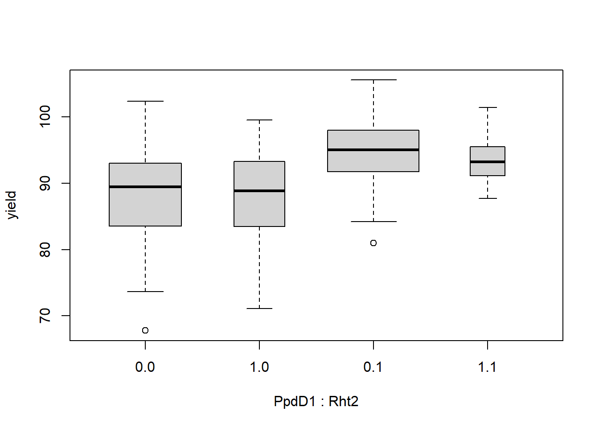
We now have boxplots for the four classes of +/- ppd and +/- rht2 alleles. We added varwidth=TRUE to scale the width of each boxplot to the square root of the different samples sizes. The group “0.1” carries the wild-type ppdD1 allele for late flowering and the dwarfing allele at rht2, and would appear to be the highest yielding, and largest, group of lines. Substitute FT (flowering time) for yield in the boxplot to get something a little more exciting.
To find out what options are available for commands, switch from the “Plots” tab to “Help,” then type in the name of the command you are interested in. The help is often cryptic, but with practice, its interpretation becomes easier.
A useful command for displaying relations between all variables in a data set is “pairs,” we’ll introduce the command and then refine it. Try running:
pairs(TG_data_for_day_1)
It produces an error message? Some of the data are non-numeric. This is being caused by the names in the “variety” column. We’ll remind ourselves what the names of the data columns are:
names(TG_data_for_day_1)## [1] "variety" "year" "ORIGIN" "Rht2" "PpdD1"
## [6] "yield" "CALLOW_2011" "FRANCE_2010" "FRANCE_2011" "LGE_2010"
## [11] "LGE_2011" "NIAB_2011" "FT" "HT" "AWNS"We are only interested, in plotting the yield data, ignoring the other traits for now. We’ll also select the subset of lines which were registered in Germany. These are labeled DEU in the origin column. Finally we’ll add a title:
pairs(TG_data_for_day_1[(ORIGIN=="DEU"),6:12],main="German varieties only")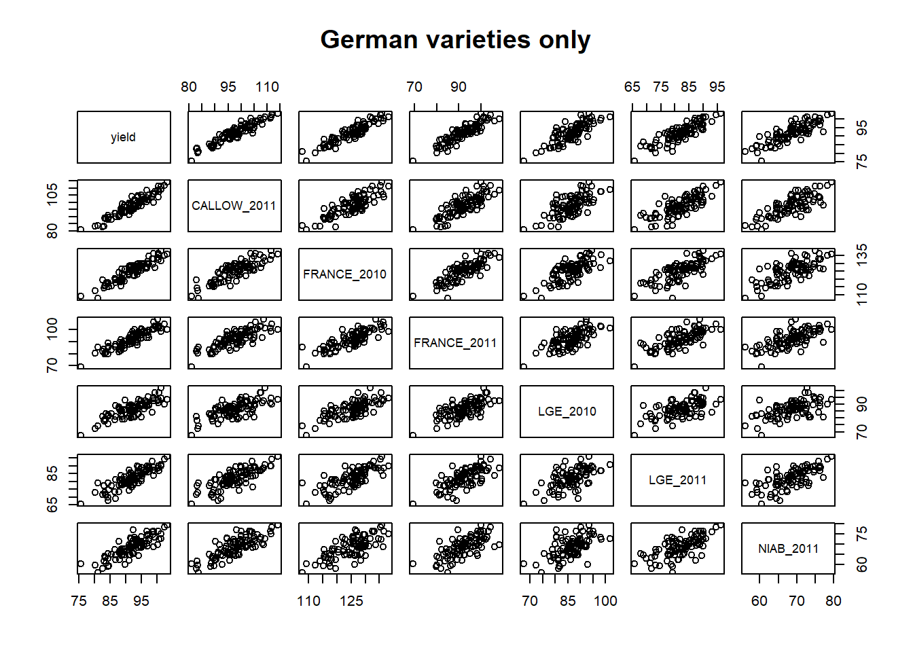
This is easier to interpret and we can see that the yield of German varieties is strongly correlated across all the sites. Note the use of the square brackets [ ] to reference rows and columns of our data set. We have seen this in the last section too. As revision:
[1,2]refers to a single cell - row one, column 2.[2:5,]refers to rows 2 to 5 inclusive, and to all columns.[,-3]refers to all rows and all columns except column 3.[,c(1,4:6)]refers to all rows and to columns 1, 4, 5, and 6.
You cannot mix omission of rows or columns by using “-” with inclusion using anything else, but otherwise this provides you with a flexible way of selecting subsets of data.
c(... , ... , ... ,) as used above, is a method of concatenating data into a single entity and is used quite extensively. It can also be used as a method of entering small amounts of data directly into R:
fred<-c(1:2, "Buckle my shoe")
fred## [1] "1" "2" "Buckle my shoe"Another way of selecting a subset of data is to use the subset command
fred<-subset(TG_data_for_day_1,select=c(variety,ORIGIN,yield))
head(fred)## variety ORIGIN yield
## 1 AARDEN DEU 103.23
## 2 AARDVARK GBR 88.55
## 3 ABELE GBR 90.76
## 4 ABO FRA 82.24
## 5 ACCESS GBR 96.66
## 6 ACCOR FRA 90.05The new command head, gives the same result as: fred[1:6,]. It prints the first 6 rows.
In R, the simplest non-graphical method of generating a summary of data is:
summary(TG_data_for_day_1)[,1:6]## variety year ORIGIN Rht2
## Length:376 Min. :1946 Length:376 Min. :0.0000
## Class :character 1st Qu.:1988 Class :character 1st Qu.:0.0000
## Mode :character Median :1997 Mode :character Median :1.0000
## Mean :1994 Mean :0.5508
## 3rd Qu.:2003 3rd Qu.:1.0000
## Max. :2007 Max. :1.0000
## NA's :22
## PpdD1 yield
## Min. :0.0000 Min. : 67.79
## 1st Qu.:0.0000 1st Qu.: 88.60
## Median :0.0000 Median : 92.63
## Mean :0.2261 Mean : 91.83
## 3rd Qu.:0.0000 3rd Qu.: 96.32
## Max. :1.0000 Max. :105.58
## Again, to save space, I’ve limited this command to columns 1 to 6, by using: [,1:6].
For a numeric column such as yield, the output typically shows:
- Min. : the minimum value
- 1st Qu.: the first quantile
- Median : the median
- Mean : the sample average
- 3rd Qu.: the third quantile
- Max. : the maximum value.
- NA’s : the number of missing values
The first quartile, the median and the third quartile give the values of the observations, 1/4, 1/2, and 3/4 of the way down a sorted list of each variable. These values, together with the minimum, maximum and average, give a simple assessment of the distribution of the traits. You can also just get the summary information for one variable by using:
summary(HT)## Min. 1st Qu. Median Mean 3rd Qu. Max.
## 57.52 69.77 73.79 75.25 80.12 97.15The summary statistics given collectively by summary are also available as separate commands, listed below (substitute the variable name of your choice for “x”):
mean(x)
median(x)
quantile(x)
min(x)
max(x)
Note that quantile returns the quartiles. This is the default for the command, which can be altered.
This is an important quirk of R:
mean(Rht2)## [1] NAR does not ignore missing values by default (although some functions do). Because Rht2 has some missing data (the NAs) R returns “NA” rather than the mean of the available data. This is often irritating, but it is safe: you will not forget that you have missing data. The rather longwinded way to cope with this is as follows:
mean(Rht2,na.rm = TRUE)## [1] 0.5508475The additional logical variable na.rm (meaning: not available, remove) is set to the value TRUE. In English: remove the NA values before calculating the mean. A number of other commands require this option too.
One dangerous exception to the default behavior of R is the command length, which counts the number of entries in a vector:
length(Rht2)## [1] 376The value of 376 is returned: this includes the missing values, which is logical but often misleading. To count the number of observations, excluding the NAs:
sum(!is.na(Rht2))## [1] 354Breaking this down, is.na() is the command to return the logical value TRUE or FALSE depending on whether each value of a variate exists or not.
is.na(Rht2)[1:5]## [1] FALSE TRUE FALSE FALSE FALSEI’ve only shown the first five logical values, but this would continue for every row. The use of !is.na() switches this around to return TRUE if the value is NA (ie does not exist). ! is the R symbol to negate the following argument. (We introduced != to mean “not equal to” earlier.)
!is.na(Rht2)[1:5]## [1] TRUE FALSE TRUE TRUE TRUEFor arithmetic purposes, the logical TRUE has a value of 1 and FALSE has a value of 0, sum() returns the sum or total, so sum(!is.na(Rht2)) returns the value of 354.
Some other useful summary commands are listed below:
sum(yield,na.rm=T) returns the total yield
sum(yield,na.rm=T) returns the of yield variance
sd(yield,na.rm=T) returns the standard deviation.
rowMeans(dataset,na.rm=T) returns means across rows of a dataset
colMeans(dataset,na.rm=T) returns means across columns of a dataset
rowSums(dataset,na.rm=T) returns totals across rows of a dataset
colSums(dataset,na.rm=T) returns totals across columns of a dataset
These commands have all been listed including the na.rm=T option. If the dataset is complete this option need not be included.
5 Let’s say we measured leaf length from 10 plants from one of our plots. For whatever reason one leaf was missing from the measurements:
Create this vector: leaf_sizes<-c(30.1, 32.3, 36.8, 34.1, 32.0, NA, 32.4, 30.1, 29.9, 32.6)
Plot a histogram showing the distribution of our leaves. Then add a title and figure legends (measurements are in cm), see help(hist) if you get stuck.
What’s the mean of the 9 leaves?
It’s pointless really to keep the NA in the vector here, produce a vector of 9 numbers without the NA.3.7 Calculations and data manipulation
Once data have been read into R, the vectors (columns of data) which contain each variable can be manipulated in the same manner as individual numbers. For example:
harvest_index<-yield/HT
boxplot(harvest_index~PpdD1)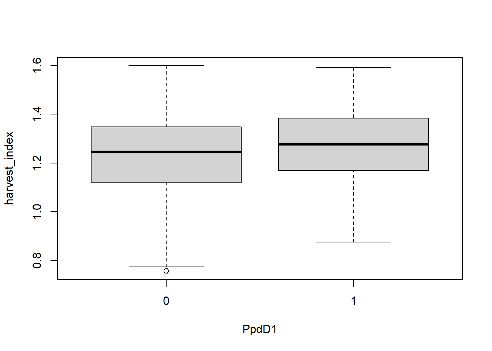
The late flowering allele (coded 1) seems to have a slightly higher harvest index. Whether this difference is likely genuine or just due to chance is something shall see how to test shortly.
3.7.1 Sorting data
Sorting data and inspection of high and low values is also of assistance in detecting errors. In R this is carried out using the command sort:
sort(yield) [1:5]## [1] 67.79 71.12 73.67 74.12 74.38To save paper I’ve added the [1:5] to only produce the first 5 values, or in this case the lowest 5 values.
More generally, it is usual to sort a block of data with respect to one or more columns. Routinely, this may be more easily achieved in Excel. In R: First select yield and some descriptors for ease of display:
TG.sub<-subset(TG_data_for_day_1,select=c(variety,ORIGIN,year,yield))Then display the top few lines of the new dataframe:
head(TG.sub[order(ORIGIN,year),])## variety ORIGIN year yield
## 190 IBIS DEU 1963 89.61
## 234 MIRONOVSKAJA DEU 1963 84.43
## 45 ASTRON DEU 1965 92.19
## 97 CARIBO DEU 1968 88.29
## 310 SENATOR DEU 1970 95.76
## 229 MERKUR DEU 1973 86.37We used order(ORIGIN,year) to sort the whole dataframe, indexed by country of origin and then year of release. Alphabetically, the German varieties are first.
3.7.2 Relationships between variates
The correlation coefficient ranges from zero to one and measures the strength of the relationship between two variables:
cor(yield,year)## [1] 0.6218021We can enter a block of data and generate a table of correlation coefficients in a single command. There are some traps for the unwary however:
cor(TG_data_for_day_1[,4:6])## Rht2 PpdD1 yield
## Rht2 1 NA NA
## PpdD1 NA 1.0000000 -0.1556021
## yield NA -0.1556021 1.0000000cor(TG_data_for_day_1[,4:6],use="complete")## Rht2 PpdD1 yield
## Rht2 1.0000000 -0.2461724 0.5021948
## PpdD1 -0.2461724 1.0000000 -0.1728991
## yield 0.5021948 -0.1728991 1.0000000cor(TG_data_for_day_1[,4:6],use="pairwise.complete")## Rht2 PpdD1 yield
## Rht2 1.0000000 -0.2461724 0.5021948
## PpdD1 -0.2461724 1.0000000 -0.1556021
## yield 0.5021948 -0.1556021 1.0000000The first call gives no results for Rht2 because it has missing data. The second method uses “complete observations,” that is to say only records with no missing data for any field. This is the default method for some commercial statistical software systems. In the example here, 22 records of data are discarded. The third method does not discard complete records. It excludes from the analysis only those pairs of observations in which at least one of the pair is NA. In this example, correlations among PpdD1 and yield will be based on all varieties as there are no missing data for these two traits. This option can be particularly useful with extensive sets of genotype data: even if marker calling rates are high, with multiple markers it may be rare for a single individual or line to have no missing data.
In passing, we note that the calculation of a correlation coefficient is not usually a particularly sensible or conventional way to study the relationship between two binary variables (here Rht2 and PpdD1). More conventional would be to tabulate the data in a 2 x 2 contingency table. However, for marker data, the squared correlation coefficient is very commonly used as a measure of linkage disequilibrium between two loci, so the example given here has some justification (although a 2 x 2 table of observations is still informative and is demonstrated later on).
Correlation coefficients are a simple way of quantifying relationships between two variables. However, as we have already commented, it is often better to visualise the data in a scatter plot:
plot(year,yield)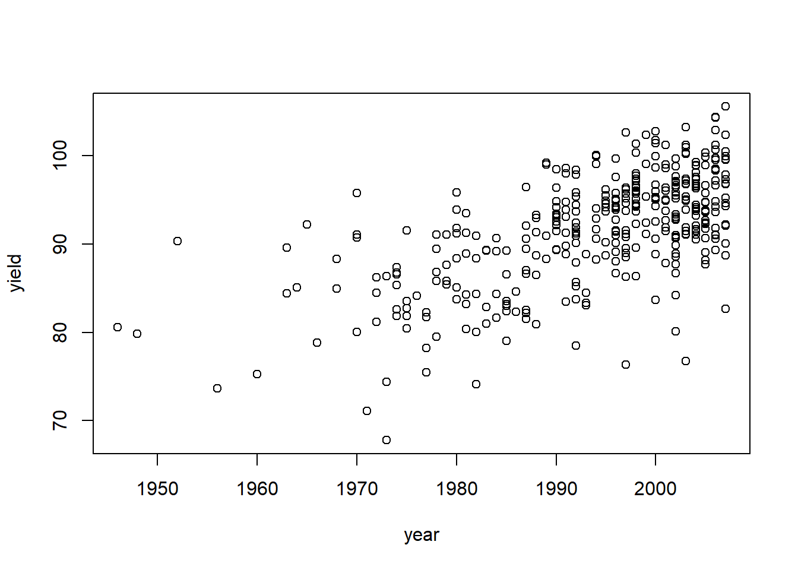
R also provides other methods of displaying these correlations graphically. Image creates a coloured grid of a matrix with colours depending on the values in the matrix. First we shall save the correlation matrix, working only on the trait data:
TG.cor<-cor(TG_data_for_day_1[,c(-1:-3)],use="pairwise.complete")
image(TG.cor^2)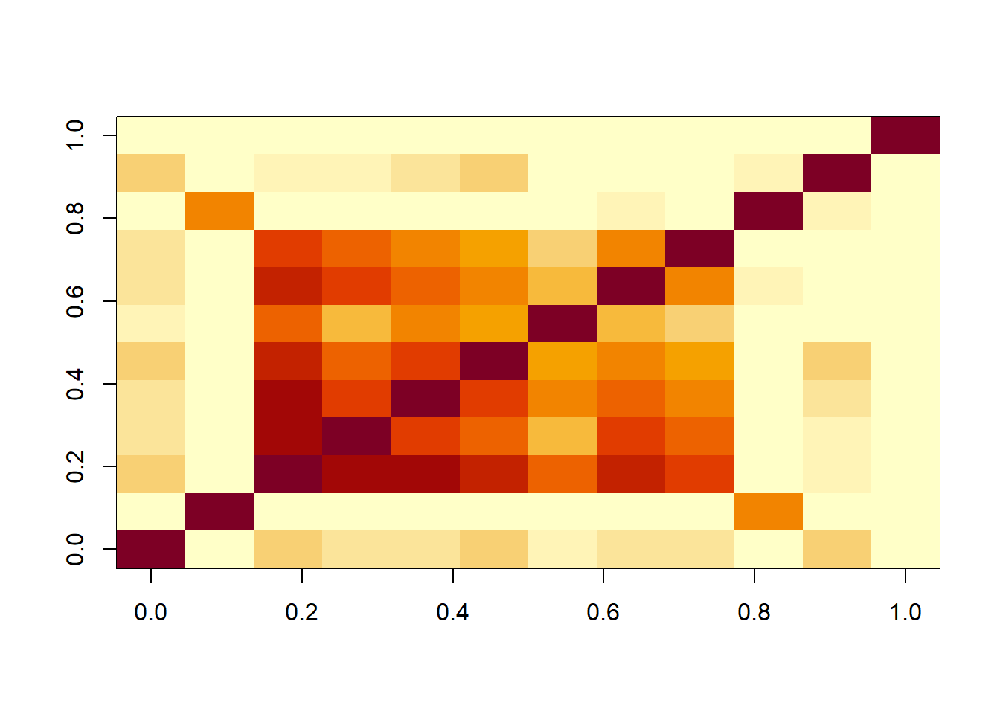
Various colours are schemes are possible: type help(image)for more detail. Note we have squared the correlation coefficient - so all values are positive - otherwise the interpretation with both large negative and large positive correlations present can become difficult. Here, the block of pale colours in the centre of the plot indicates very high correlations among the yield measurements, with lower correlations among the other traits. The function heatmap() is a useful extension to this which also plots a dendogram showing estimated relationships between entries.
heatmap(TG.cor^2,symm=T)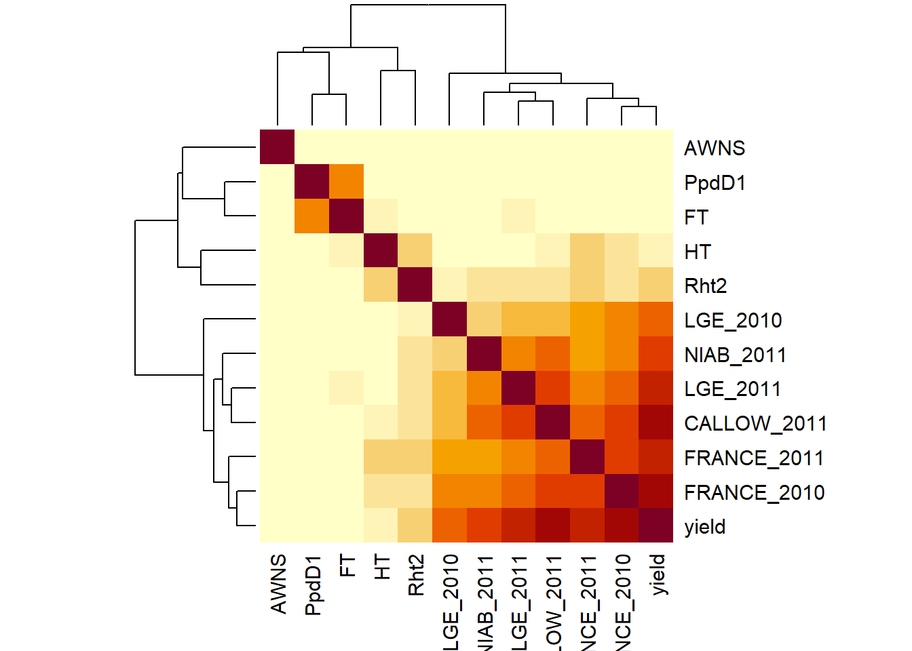
This plot alters the row and column order. symm=T is required for heatmap to recognize that it is working on a symmetrical matrix.
The interpretation seems clear. The yield measurements correlate highly. PpdD1 and flowering time are associated, as are Rht2 and height. The relationships show up even better using a different colour scheme (which I found someone else using and copied):
heatmap(TG.cor^2,symm=T,col=c(grey(0.4), "blue", "green", "orange","red"))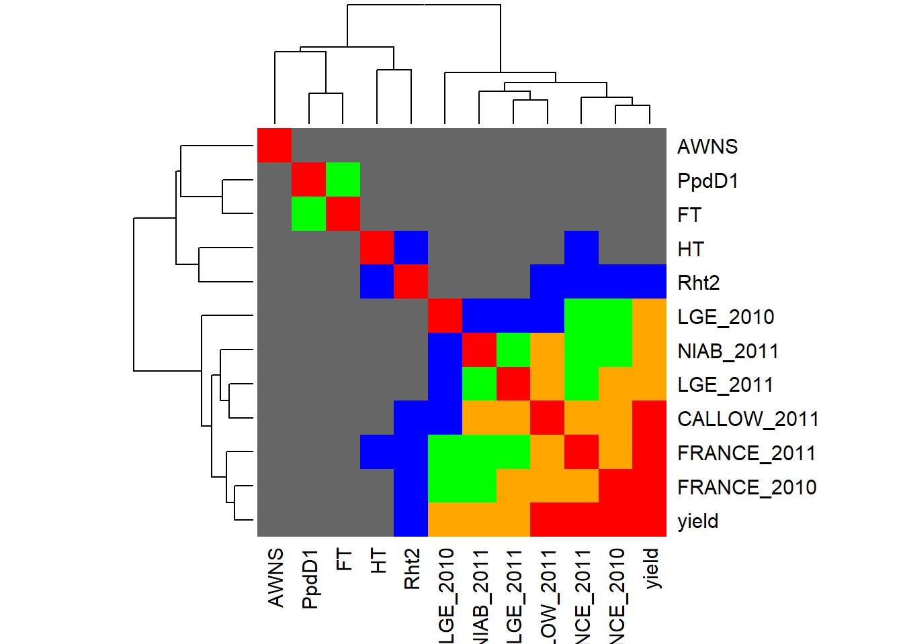
This highlights a weak relationship between height and yield, at least in some environments.
3.7.3 Exporting your script and workspace
This is not as straightforward as you would think as the script and workspace (your data in the Environment window) need to be saved separately.
To save your workspace (the working environment you have created) in your working directory, you can just click:
Session / Save Workspace As
Or you could run:
save.image(file="File_name_for_your_data.RData")
Note that this will save an .RData file.
Next save the script you have created in the script editing window as an R file. You can then come back to your results by loading both the R file and the saved workspace. You simply save the script by clicking on File / Save. Or you could press: Ctrl + S
To reload your workspace you can go to: Session / Load Workspace. Or use load("myfile.RData") if you are in the correct working directory. To open your script file, you would simple click on it and it will open RStudio (or open in RStudio if you already have the program open).
3.7.4 Saving a data table
There are two simple methods for this, the simplest is to cut and paste from R to Word or Excel, exactly as you would for any other Windows application.
However, a better method would be to use R to do it. If you want to export a table you have created as a csv file (other formats are available):
#create a subset of the main data, in this case we just take varieties with a GBR origin
GBRorigin<-subset(TG_data_for_day_1, ORIGIN=="GBR")
#save this as a new csv file
write.csv(GBRorigin, "this will be the file name.csv")6 You now should of seen the use of subset() several times. This is a very useful function which subsets large data.frames to smaller ones based on criteria. Firstly use subset() to form a new data.frame of only the unawned lines. Ask for help if you are stuck.
Re-order your new data.frame by origin.
Using your new data, form a plot showing the relationship between height (HT) and yield. Usecor() to test the correlation between the two variables.
3.8 Basic statistical analysis
3.8.1 The t-test
The t-test is a simple and robust method to test if the difference in means between two samples, or the difference between the mean of a sample and a known constant, is statistically significant. In other words, does the difference look too large to have occurred as a result of bad luck in selecting the samples for analysis?
t = difference / standard error of the difference.
For large sample sizes, a value of t > 1.96 will only occur by chance, in the absence of any genuine difference, in about 5% of experiments. A value > 1.96 is therefore judged to be improbably large: the difference in means is declared to be statistically significant at the 5% level.
The t-test assumes that the sampling error of the difference being tested is normally distributed. In real data sets, this condition is often met. Firstly, the trait being measured is itself often normally distributed, and secondly, even if the trait has a non-normal distribution, mean trait values will be close to normal provided the sample size is moderately large (greater than about 10).
For example, the plot below shows the distribution of 1000 numbers. Each number was generated by taking the mean of 10 uniformly distributed random numbers. It is clear that although the distribution of original random numbers was very non-normal, the mean of a sample of 10 such numbers is pretty close to normal. In fact, in the early days of computing, normally distributed random numbers were often generated in this way. The tendency for the distribution of means to be normally distributed is called the Central Limit Theorem. It explains the popularity of the normal distribution in statistics and also the tendency for many traits in nature to be roughly normally distributed - for example if variation in a phenotype results from variation at multiple genes, the phenotype itself will often inevitably be normally distributed.

Illustration of the central limit theorem
The t-test is very simply invoked in R. To test the difference in means between yield in Germany in the two years of testing:
t.test(LGE_2010,LGE_2011)##
## Welch Two Sample t-test
##
## data: LGE_2010 and LGE_2011
## t = 9.8055, df = 745.63, p-value < 2.2e-16
## alternative hypothesis: true difference in means is not equal to 0
## 95 percent confidence interval:
## 4.019585 6.032010
## sample estimates:
## mean of x mean of y
## 85.79497 80.76918The output provides a value for t and its associated p-value to test the significance of the difference in means, and also the means themselves. In addition, 95% confidence intervals are provided. These refer to the difference between the two means. Statisticians can get quite hot under the collar about what, exactly, 95% confidence intervals actually are. We can state that over a long lifetime of calculating 95 % confidence intervals for parameter estimates, they will have included the true parameter value in 95 % of cases. It is best not to worry too much about this.
Note that the degrees of freedom (df) is 745.63 and not a whole number. This is because the default setting for R is to assume that, whether or not the means of the two groups being tested are different, the variances themselves are different. In accounting for this we end up with fractional degrees of freedom. This is the Welch variant of the t-test - stated in the first line of the output.
To test whether the variances in the two groups are similar, we can use a variance ratio test, or F test - dividing one variance by the other and estimating whether the deviation from the expected value of 1 is attributable to chance or is indicative of something else:
var.test(LGE_2010,LGE_2011)##
## F test to compare two variances
##
## data: LGE_2010 and LGE_2011
## F = 0.85785, num df = 375, denom df = 375, p-value = 0.1381
## alternative hypothesis: true ratio of variances is not equal to 1
## 95 percent confidence interval:
## 0.700429 1.050643
## sample estimates:
## ratio of variances
## 0.8578466The F-ratio of 0.86, with 375 and 375 degrees of freedom is not significant (p-value 0.1381).
If var.test(LGE_2011,LGE_2010) was called (the order of the two trials is reversed), the F-ratio would be 1.17 but the p-value would be unchanged. When testing the ratios of two variances in an F test, care is required because we are not testing whether the numerator variance is significantly greater than the denominator, which is the usual use of the F-ratio in ANOVA. Here we are carrying out a two-tailed test of significance rather than a one-tailed. Fortunately using var.test() takes care of this for you. If you were to do this by hand; dividing the larger variance by the smaller, then looking up the probability associated with that value of F in tables (or you could use an R function, p(f), then the probability would need to be doubled.
Since the variances are not significantly different (i.e. they are homogeneous), t.test can be called in a form to take this into account:
t.test(LGE_2010,LGE_2011,var.equal = T)##
## Two Sample t-test
##
## data: LGE_2010 and LGE_2011
## t = 9.8055, df = 750, p-value < 2.2e-16
## alternative hypothesis: true difference in means is not equal to 0
## 95 percent confidence interval:
## 4.019595 6.032001
## sample estimates:
## mean of x mean of y
## 85.79497 80.76918This is the more usual form for the t test - as given in most text books. It is more powerful test than Welch’s variant, provided the variances are homogeneous. Note that the degrees of freedom is now an integer.
A more biologically interesting comparison is whether Rht2 and PpdD1 have an effect on yield. The problem here is that data for the two groups to be compared (yields for one allele and yields for the other) are no longer in separate variables. To tell R that data to be analysed are in one variate but are described by data in another, we use the tilde operator (~) introduced in the section on syntax:
t.test(yield~PpdD1)##
## Welch Two Sample t-test
##
## data: yield by PpdD1
## t = 3.0435, df = 136.67, p-value = 0.002806
## alternative hypothesis: true difference in means is not equal to 0
## 95 percent confidence interval:
## 0.8154943 3.8410701
## sample estimates:
## mean in group 0 mean in group 1
## 92.35522 90.02694The difference in mean yield between the two PpdD1 alleles is significant, but quite small. PpdD1 could have a direct effect on yield or it could lie close to a QTL for yield, or the significant result could be due to something we don’t know about concerning the origins of the varieties under test. Disentangling trait-marker associations due to the presence of a closely linked QTL from other spurious causes of association is the challenge of association genetics. We can also see if the effect of PpdD1 is consistent across all sites. There are six sites, in columns 6-12 of the dataset. We could analyse each site by editing the name of the variable before running the command, but we can automate this procedure using a loop.
This would be achieved by running:
for(i in 6:12) {
print(t.test(TG_data_for_day_1[,i]~ PpdD1))
}Give this a go on your computers.
What do you make of the output? It’s possible to select individual components of the output (such as the means and p-values) so we can summarise many analyses concisely.
for(i in 6:12) means repeat the commands which follow a number of times by varying an index variable, here “i,” from 6 to 12 (seven times in total), incrementing it by 1 each repeat. Then, because we are analysing have TG_data_for_day_1[,i], on each iteration [,i] is substituted with [,6] then [,7] … [,12] and all our analyses are done. We are beginning to write scripts!
The commands we want to loop over do not have to be restricted to a single line, provided they are enclosed in curly brackets. Note that as these commands are run within a loop, the output does not get echoed to the screen unless we include the “print” statement as above.
3.8.2 Linear Regression
We have already come across the command to correlate two traits: cor(). To fit a straight line to a data set we use the R command lm(); for linear model. Suppose we want to study the effect of year on yield:
lm(yield~year)##
## Call:
## lm(formula = yield ~ year)
##
## Coefficients:
## (Intercept) year
## -583.2088 0.3386The output is somewhat sparse. A feature of R, in contrast to many statistical packages is that by default it does not deliver multiple pages of output by default, from which you may only wish to extract a single figure. Here the output gives you the best fitting straight line:
\(yield = -583.4 + (0.3386 * year)\)
More output is available but we need to be explicit that we wish R to produce it. First we shall rerun the analysis, but save the results:
yield_year_regression<-lm(yield~year)No output is generated. We can produce some using summary():
summary(yield_year_regression)##
## Call:
## lm(formula = yield ~ year)
##
## Residuals:
## Min 1Q Median 3Q Max
## -18.1783 -3.2680 0.7123 3.1559 12.6978
##
## Coefficients:
## Estimate Std. Error t value Pr(>|t|)
## (Intercept) -583.20878 43.96487 -13.27 <2e-16 ***
## year 0.33855 0.02205 15.35 <2e-16 ***
## ---
## Signif. codes: 0 '***' 0.001 '**' 0.01 '*' 0.05 '.' 0.1 ' ' 1
##
## Residual standard error: 4.915 on 374 degrees of freedom
## Multiple R-squared: 0.3866, Adjusted R-squared: 0.385
## F-statistic: 235.8 on 1 and 374 DF, p-value: < 2.2e-16The most interesting part of the output is given at the end: the F-statistic and p-value for the significance of the regression - hugely significant in this example. The Multiple R-Squared is the proportion of the total sum of squares accounted for by the regression. It is also the square of the correlation coefficient between yield and year of origin. The Adjusted R-squared is the proportional reduction in variance after fitting the regression (i.e. 1-residual variance/total variance). Both these figures give an indication of how effective the regression has been in accounting for the observed variation: a significant regression does not imply that a relationship is particularly important (although it is here). Equally, with very small experiments, large proportions of variation may be accounted for, but the regression is still non-significant. This is generally an indication that you should have designed a larger experiment.
A more conventional display of the regression analysis is given as:
anova(yield_year_regression)## Analysis of Variance Table
##
## Response: yield
## Df Sum Sq Mean Sq F value Pr(>F)
## year 1 5694.7 5694.7 235.75 < 2.2e-16 ***
## Residuals 374 9034.0 24.2
## ---
## Signif. codes: 0 '***' 0.001 '**' 0.01 '*' 0.05 '.' 0.1 ' ' 1This uses the anova() command. To R, anova is the name given to a form of tabular output. Formally, the analysis of variance itself is just a particular type of multiple regression analysis, and that is exactly how R treats it, as we shall see shortly.
We can look at a plot of the data with our fitted line a follows:
plot(year,yield)
abline(yield_year_regression)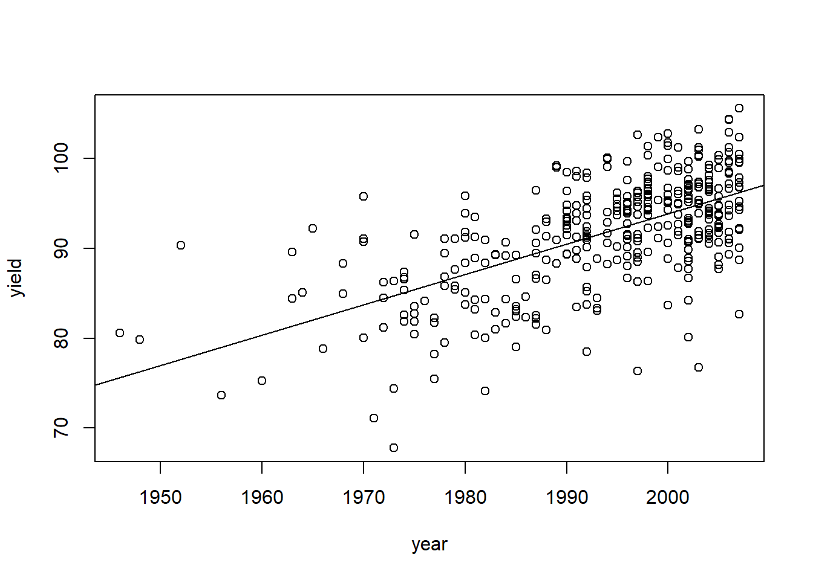
When using plot, the name of the variate you want plotted on the x axis comes first. The additional command, abline(), adds the best fitting straight line. There is a lot of variation around the best fitting line, but as we have varieties from three different countries of origin, and we have tested them in three different countries, this is not surprising.
Finally, we look at how to extract residual values and fitted values from a regression. Large residual values for particular observations are often of use in searching for errors in data. Also, identification of the individuals or varieties responsible for large residuals may sometimes suggest some other factor which needs to be considered in the analysis. Fitted values and residuals are extracted as:
fitted(yield_year_regression)[1:5]## 1 2 3 4 5
## 94.90825 92.87695 83.73608 86.10594 93.21550resid(yield_year_regression)[1:5]## 1 2 3 4 5
## 8.321746 -4.326949 7.023919 -3.865936 3.444500Note I’ve only printed values 1 to 5 ([1:5]) to save space. These could be saved to other variables, or plotted:
plot(fitted(yield_year_regression), resid(yield_year_regression))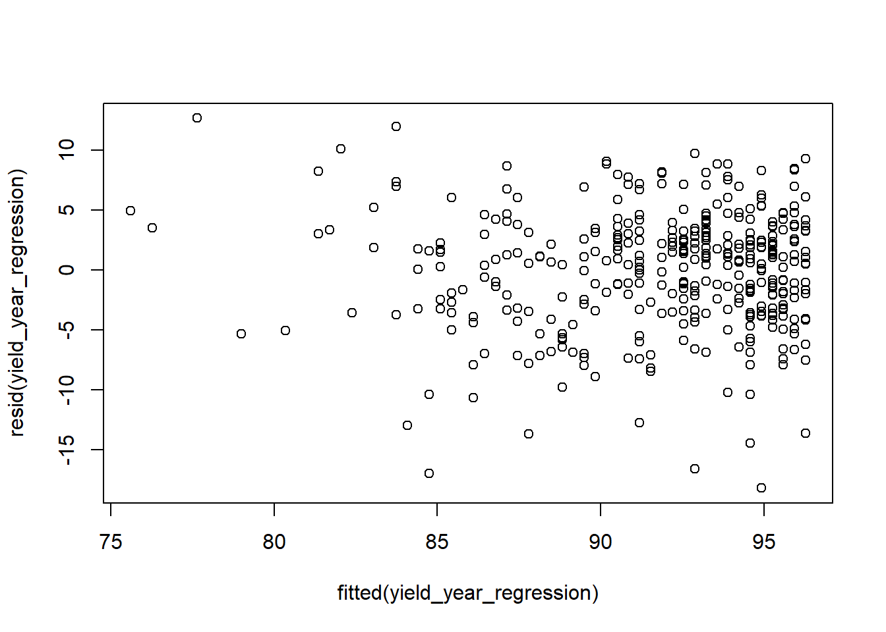
A plot of residuals against fitted values is often informative. If large residuals tend to be associated with large fitted values, for example, this indicates that the error variances are not homogenous and we treat our results with more caution. Residuals which increase in magnitude with increasing fitted values are often an indication that transforming the data to logarithms before analysis may be warranted.
For linear regression in R, however, we can produce four diagnostic plots very easily:
plot(yield_year_regression)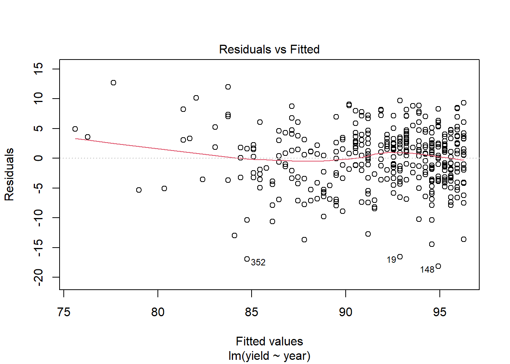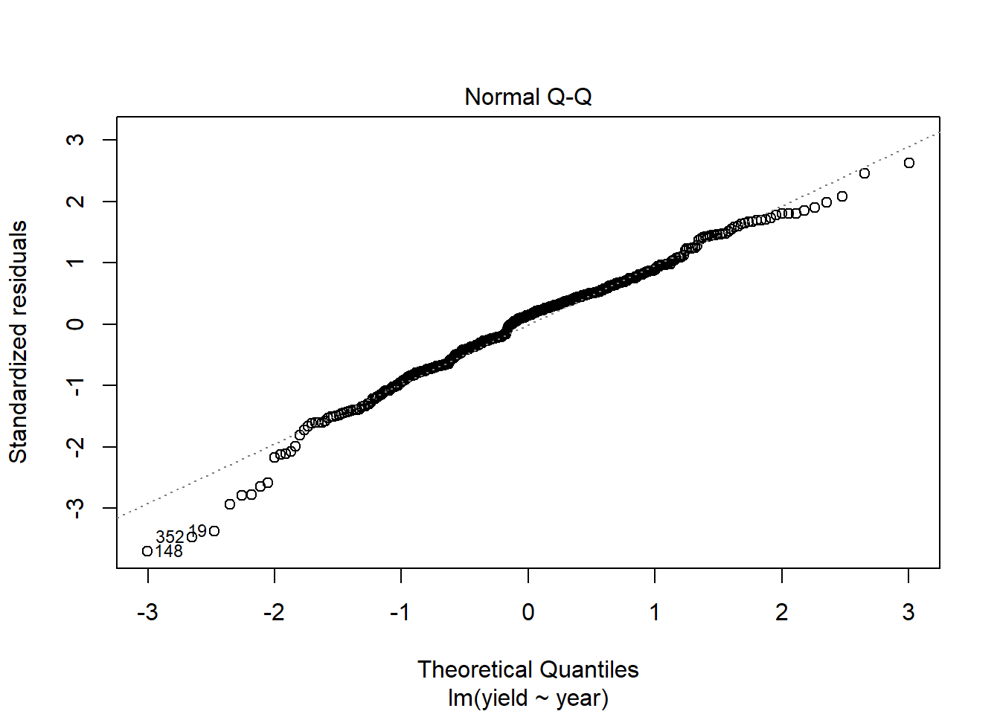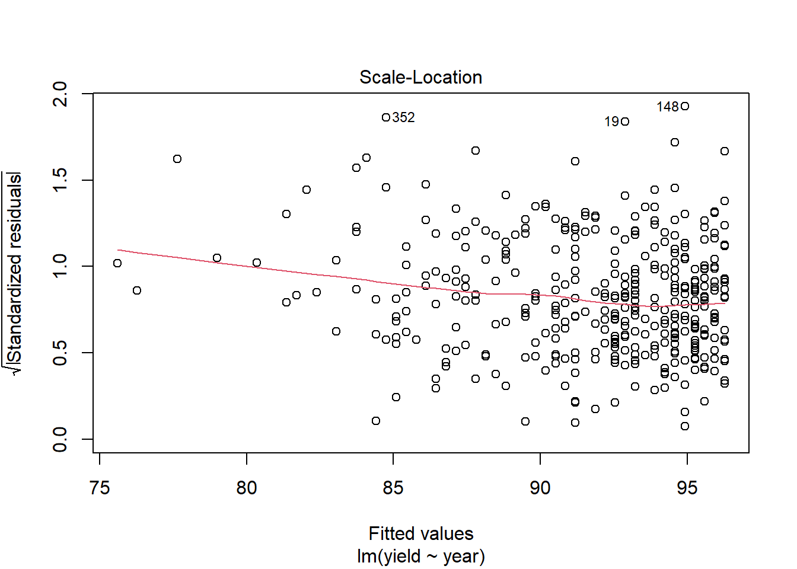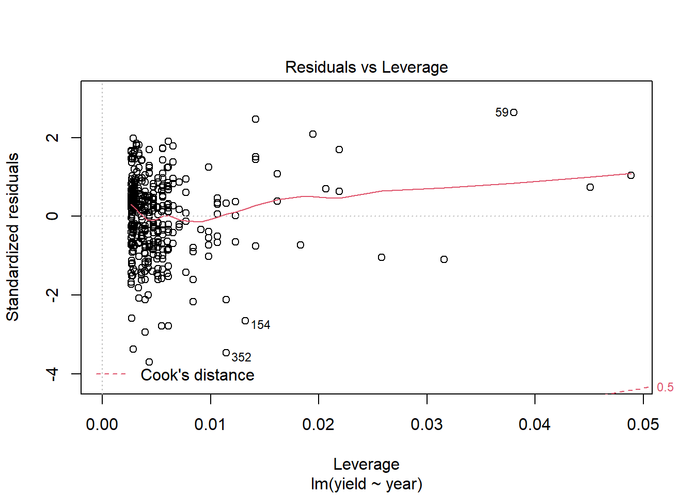
The first two plots are the most important and the easiest to interpret:
The first plot is of residuals against fitted values as previously described. There is nothing untoward here.
The QQ plot takes the residuals, sorts them and standardises them by dividing them by the standard deviation, so they have a mean of zero and a variance of 1. It is possible to work out what the expected value of these sorted normal deviates should be if the error distribution was truly normal. Plotting the observed against the expected gives you a QQ plot (QQ for quantile-quantile). For well behaved data, the points should lie on a straight line with a gradient of one. The data here look acceptable.
The Scale-Location plot is essentially looking at the same thing as the plot of residuals against fitted values.
The Residuals vs Leverage shows the strength of data points on the parameters of the regression. Data points with very high or low values tend to have more effect (leverage) on the regression equation. This can be quantified. If a data point with high leverage also has a big residual (positive or negative) it is an indication that the data for that observation wants checking for errors, and maybe even deleting. Cook’s distance, which is also mentioned in this plot, is a measure of the improvement in error sum of squares if a particular data point were dropped. In the plot above, there is nothing to be checked: the data are good.
3.8.3 Multiple regression
Multiple regression in R requires little more than simple linear regression. The lm() command is still used. All that is required is to specify a more complex model using the syntax described in the Basic R Syntax section of this guide:
yield_mult_reg<-lm(yield~year+ORIGIN+PpdD1+Rht2+FT+HT+AWNS)
yield_mult_reg##
## Call:
## lm(formula = yield ~ year + ORIGIN + PpdD1 + Rht2 + FT + HT +
## AWNS)
##
## Coefficients:
## (Intercept) year ORIGINFRA ORIGINGBR PpdD1 Rht2
## -460.4045 0.2639 -0.5753 0.9456 -0.2138 2.2100
## FT HT AWNS
## 0.2335 -0.1403 -0.4815Thus yield is predicted as:
-461.2409
+ 0.2645 x year
+ -0.5637 if French origin
+ 0.9510 if UK origin
+ -0.2157 x Pppd1
+ 2.2112 x Rht2
+ 0.2311 x FT
+ -0.1402 x HT
+ -0.6402 x Awns
Note this form of analysis is acceptable for PpdD1 and Rht2, SNPs and other binary markers provided the markers are coded numerically. 0 and 1 are ideal codes, but 0 can sometimes be confused with a missing value, especially if data are to be analysed in packages other than R. 1, 2 coding is also acceptable. Numeric coding cannot be used at all for multiallelic markers since it implies that alleles coded with a higher number have a higher value than those with a lower number.
Note the order in which the variates are supplied to lm does not affect the estimated coefficients:
lm(yield~ year+ORIGIN+FT+Rht2+PpdD1+HT+AWNS)##
## Call:
## lm(formula = yield ~ year + ORIGIN + FT + Rht2 + PpdD1 + HT +
## AWNS)
##
## Coefficients:
## (Intercept) year ORIGINFRA ORIGINGBR FT Rht2
## -460.4045 0.2639 -0.5753 0.9456 0.2335 2.2100
## PpdD1 HT AWNS
## -0.2138 -0.1403 -0.4815Will give the same answer. However, this is not the case for estimates of significance:
anova(yield_mult_reg)## Analysis of Variance Table
##
## Response: yield
## Df Sum Sq Mean Sq F value Pr(>F)
## year 1 5177.9 5177.9 253.1041 < 2.2e-16 ***
## ORIGIN 2 663.2 331.6 16.2102 1.879e-07 ***
## PpdD1 1 121.4 121.4 5.9356 0.015348 *
## Rht2 1 554.0 554.0 27.0786 3.375e-07 ***
## FT 1 33.0 33.0 1.6122 0.205051
## HT 1 172.5 172.5 8.4344 0.003921 **
## AWNS 1 5.1 5.1 0.2475 0.619158
## Residuals 342 6996.4 20.5
## ---
## Signif. codes: 0 '***' 0.001 '**' 0.01 '*' 0.05 '.' 0.1 ' ' 1anova(lm(yield~ year+ORIGIN+FT+Rht2+PpdD1+HT+AWNS))## Analysis of Variance Table
##
## Response: yield
## Df Sum Sq Mean Sq F value Pr(>F)
## year 1 5177.9 5177.9 253.1041 < 2.2e-16 ***
## ORIGIN 2 663.2 331.6 16.2102 1.879e-07 ***
## FT 1 164.7 164.7 8.0498 0.004822 **
## Rht2 1 543.2 543.2 26.5504 4.349e-07 ***
## PpdD1 1 0.5 0.5 0.0261 0.871836
## HT 1 172.5 172.5 8.4344 0.003921 **
## AWNS 1 5.1 5.1 0.2475 0.619158
## Residuals 342 6996.4 20.5
## ---
## Signif. codes: 0 '***' 0.001 '**' 0.01 '*' 0.05 '.' 0.1 ' ' 1In the two analyses we’ve swapped the order in which PpdD1 and FT were fitted. In the first anova table, the sum of squares for PpdD1 is 121.4 and 33.0 for FT. In the second analysis, the sum of squares is 0.5 for PpdD1 and 164.7 for FT. The sums of squares for Rht2 has changed a bit but all the others, and most importantly the Residual SS, are unchanged. In unbalanced experiments such as this, where combinations of PpdD1 and height (and most other things too) are not all equally represented, the results from the analysis of variance depend on the order in which the terms are represented in the model. However, there is an easy way to interpret this table. Taking output from the last analysis a line at a time:
The effect for year is fitted first, and is found to be statistically significant:
year P < 2.2e-16 ***
After fitting the year, origin it is fitted next,
ORIGIN P = 1.867e-07 ***
then FT:
FT P = 0.004813 **
The p-value of 0.0049 for FT is the significance for FT, after accounting for any effect of year and origin. By the time we get to PpdD1, its effect after fitting everything above it in the table is non-significant:
PpdD1 P = 0.871809
In designed experiments, where different combinations of treatments and factors are usually equally represented, or balanced, the order in which terms are fitted makes no difference; the terms are said to be orthogonal. Balance not only has the property of making the terms orthogonal, it also makes the arithmetic very much easier. This was very important before the advent of readily available computers. However, the requirement for balance, solely from the point of view of data analysis, is now no longer required and many contemporary designs for variety trials (for example alpha-designs) are not balanced and would be impossible to analyse without a computer. A readable account of a contemporary approach to experimental design is given in the book Mead, Gilmour and Mead: “Statistical Principles for the Design of Experiments.”
In this example, the interpretation is clear: PpdD1 is known to be the major locus determining flowering time in wheat, but it doesn’t control all the variation. If we had to choose between Ppd or FT in the model, we would chose FT because its sum of squares is bigger: we account for more of the variation in the data. But here it makes sense to fit Ppd first and then to test if there is a residual effect of FT on yield. If you have time, try the same thing for Rht2 and HT.
Our prior knowledge isn’t always so good and the interpretation and order of fitting isn’t always so clear. Selecting the order in which terms are fitted, and selecting which terms to include in the final model and which to exclude is something of an art, which we shall not develop here. There are formal methods to assist in this process. These too are not covered here, but are available within R. Generally, with genetic analysis, it is usual to account for variation attributable to causes other than genes or markers first, and then fit the genetic effects. This is a conservative approach. If we had followed it here we would not have detected an effect for PpdD1.
Note that resid(), fitted(), plot() and summary() work for multiple regression exactly as for simple linear regression.
Before we leave regression, compare these two simple analyses of the relationship between yield and PpdD1
t.test(yield~PpdD1,var.equal=T)##
## Two Sample t-test
##
## data: yield by PpdD1
## t = 3.0463, df = 374, p-value = 0.002481
## alternative hypothesis: true difference in means is not equal to 0
## 95 percent confidence interval:
## 0.8254243 3.8311401
## sample estimates:
## mean in group 0 mean in group 1
## 92.35522 90.02694anova(lm(yield~ PpdD1))## Analysis of Variance Table
##
## Response: yield
## Df Sum Sq Mean Sq F value Pr(>F)
## PpdD1 1 356.6 356.61 9.28 0.002481 **
## Residuals 374 14372.1 38.43
## ---
## Signif. codes: 0 '***' 0.001 '**' 0.01 '*' 0.05 '.' 0.1 ' ' 1The p-values are identical. For a regression analysis on a single variate with only two values or classes, the two tests are equivalent. In fact:
\(t^2 = F\)
In this case
\(3.0463^2 = 9.280\).
3.8.4 The analysis of variance
In the t-test, we test if the difference between two treatment means is statistically significant. This is a special case of the Analysis of Variance in which we test if differences among multiple treatments are jointly statistically significant. We could compare multiple treatments by carrying out multiple t tests, but this increases the risk that at least one test will be declared significant by chance alone - the so called problem of multiple testing. In addition the interpretation of results becomes increasingly complex. (There is, in fact, an R command that automates this procedure and includes an adjustment for multiple testing: pairwise.t.test). The omnibus test for significance of all means, considered together, that the Analysis of Variance offers is therefore of great value.
The principal of the Analysis of Variance is that, in the absence of any genuine difference among means, the variability among those means can be predicted from the variability from observation to observation within each treatment. This argument is little more than saying that the variance of a mean is just the variance among the observations that contribute to that mean divided by the number of observations contributing to the mean:
\(V\hat{x} = Vx/n\)
We therefore have independent estimates of \(\hat{x}\), one directly from the means, and one from the within treatments variance (/n). If there are no true differences in the means of the treatments, these two estimates of variance are expected to be the same though they will still differ through sampling variation. However, if the means differ, in addition, through differential responses to the treatments we no longer expect them to be the same. Rather:
\(V\hat{x} > Vx/n\)
The test for statistically significant differences among the means is therefore a variance ratio, or F test: the variance among treatment means is divided by the expected variance calculated within treatments. This is an oversimplification: differences in the number of observations within treatments must also be taken into account and with more complicated experimental designs the analysis is also more complicated, but the basic principal remains the same: differences in means inflate the estimate of variance between treatment means compared to the independent estimate of variance from observations within treatments.
We’ll start with a simple example. Does height differ significantly between countries of origin?
boxplot(HT~ORIGIN,main="Height by country of origin")
It’s clear from this that there is a difference - German lines tend to be taller. The command for an analysis of variance is just like that for linear regression:
anova(lm(HT~ORIGIN))## Analysis of Variance Table
##
## Response: HT
## Df Sum Sq Mean Sq F value Pr(>F)
## ORIGIN 2 4274.3 2137.17 47.307 < 2.2e-16 ***
## Residuals 371 16760.6 45.18
## ---
## Signif. codes: 0 '***' 0.001 '**' 0.01 '*' 0.05 '.' 0.1 ' ' 1There are three countries of origin: so we have a test with 2 degrees of freedom. That is because if we know a line didn’t come from France or Germany, then we know (for this dataset) that it must have come from the UK: there are only two independent countries of origin. We’ve seen this before: in the earlier multiple regression analysis of yield we included origin and saw that it gave an effect for the UK and an effect for France but not for Germany. The German effect was the default - the mean - to be adjusted by the appropriate effect if a line wasn’t German. In fact if we had two extra columns of data, one with zeros everywhere except if a variety was from the UK, when we had a 1, and the second with zeros except if a variety was French, when we had a 1, then including these two columns in the analysis instead of “origin” would give exactly the same answer. And if we swapped out the “UK column” and inserted a new “German” column, we would still get exactly the same answer. Try it if you don’t believe me!
To get more information from our analysis of variance, we can use all the methods introduced earlier for linear and multiple regressions: as stated, the analysis of variance is just a special case of multiple regression.
Let’s finish off the analysis of variance with something more interesting. We know that the three countries tend to have different requirements for optimum flowering times and height. France tends to require earlier flowering lines and many varieties carry the PpdD1 early allele to achieve this. German lines tend to be taller because German wheat is often treated wheat with a growth regulator which reduces height, so there is less requirement for varieties to be bred for reduced height, commonly by using a dwarfing allele at one of the rht loci. After adjusting HT for country of origin, can we detect the effects of these major phenological loci? Do they interact?
Let’s have a look at the data first:
boxplot(HT~PpdD1*Rht2,main="HT by PpdD1 and rht2")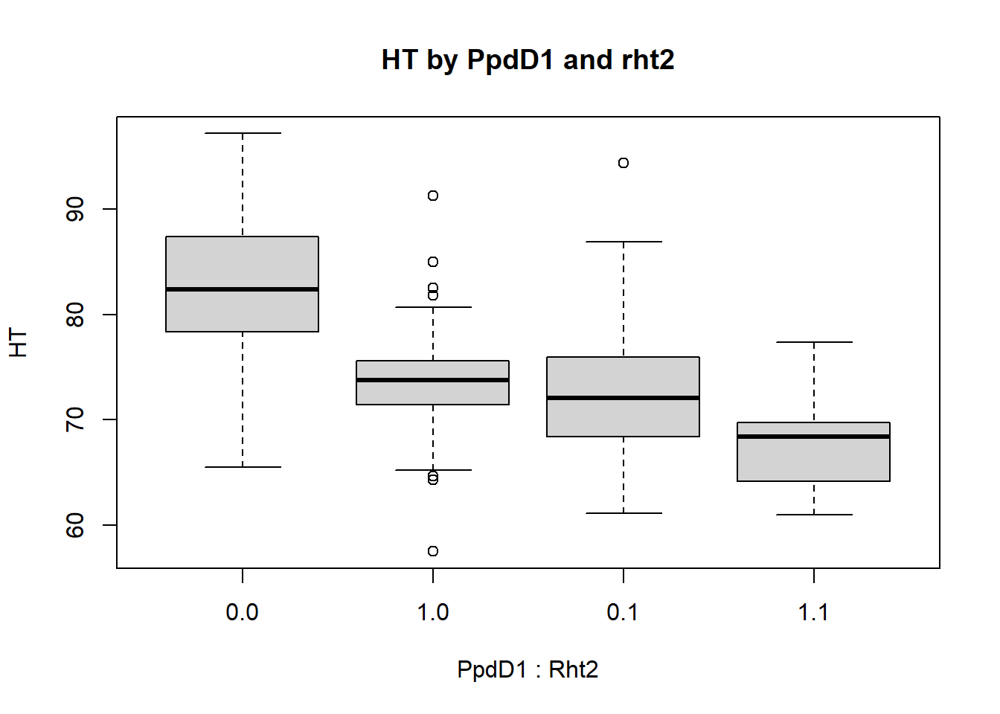
Note the coding within the command to indicate we wanted to see four classes. 0.0 represents the late Ppd allele and the tall Rht2 allele. 1.0 is the Ppd early and Rht2 tall allele, and so on. It’s clear that both loci have a big effect on height, but you can see also that although 1.1 is the shortest class, there is a bigger drop from 0.0 to 0.1 and 1.0 than there is from 1.0 and 0.1 to 1.1
Analysing the data, while taking into account country of origin?
anova(lm(HT~ORIGIN+Rht2*PpdD1))## Analysis of Variance Table
##
## Response: HT
## Df Sum Sq Mean Sq F value Pr(>F)
## ORIGIN 2 4141.7 2070.8 68.2521 < 2.2e-16 ***
## Rht2 1 3691.8 3691.8 121.6777 < 2.2e-16 ***
## PpdD1 1 1576.7 1576.7 51.9647 3.575e-12 ***
## Rht2:PpdD1 1 119.8 119.8 3.9501 0.04766 *
## Residuals 346 10498.0 30.3
## ---
## Signif. codes: 0 '***' 0.001 '**' 0.01 '*' 0.05 '.' 0.1 ' ' 1It appears there is some weak evidence that Rht2 and PpdD1are interacting. But we are ignoring other confounding factors such as flowering time itself, and many possible interactions. We can fit a complete model:
anova(lm(HT~ORIGIN*FT*Rht2*PpdD1))## Analysis of Variance Table
##
## Response: HT
## Df Sum Sq Mean Sq F value Pr(>F)
## ORIGIN 2 4141.7 2070.8 76.8732 < 2.2e-16 ***
## FT 1 1049.5 1049.5 38.9589 1.312e-09 ***
## Rht2 1 4681.8 4681.8 173.7978 < 2.2e-16 ***
## PpdD1 1 152.2 152.2 5.6487 0.0180309 *
## ORIGIN:FT 2 307.4 153.7 5.7049 0.0036625 **
## ORIGIN:Rht2 2 76.2 38.1 1.4146 0.2444857
## FT:Rht2 1 308.9 308.9 11.4673 0.0007928 ***
## ORIGIN:PpdD1 2 133.7 66.8 2.4813 0.0851744 .
## FT:PpdD1 1 24.3 24.3 0.9025 0.3428055
## Rht2:PpdD1 1 5.5 5.5 0.2033 0.6523338
## ORIGIN:FT:Rht2 2 113.2 56.6 2.1016 0.1238698
## FT:Rht2:PpdD1 1 36.2 36.2 1.3455 0.2469017
## Residuals 334 8997.4 26.9
## ---
## Signif. codes: 0 '***' 0.001 '**' 0.01 '*' 0.05 '.' 0.1 ' ' 13.9 Categorical data - the chi-squared test
Suppose we wish to test if there is an association between Rht2 and PpdD1. They are not linked, but perhaps breeders have favoured particular combinations of +/- at the two loci. Or an association might arise because of the way the varieties have been selected for inclusion in the panel of lines. The standard method of analysis of such data is the contingency chi-squared test. First we need to format our data into a table:
rht.ppd.table<-table(Rht2,PpdD1)
rht.ppd.table## PpdD1
## Rht2 0 1
## 0 106 53
## 1 170 25From this table, we can see that the allele frequency of allele 1 at PpdD1 is:
(53+25)/(106+170+53+25) or 0.22
and similarly the allele frequency of allele 1 at Rht2 is 0.55
If these loci are independent of each other in this sample, the allele carried by a variety at Rht2 will be independent of the allele carried by the same variety at PpdD1. In this case, the expected frequency of (Rht2 allele 1 + PpdD1 allele 1) individuals will be 0.22 x 0.55 or 0.12. The predicted number of “11” haplotypes is therefore 0.12 x (106+170+53+25) or 42. We have observed 25. This same exercise can be carried out for each of the other three combinations of alleles at the two loci. (These combinations are commonly called haplotypes, though this term strictly only applies if the two loci are linked). If deviations between observed and expected numbers are sufficiently large, we draw the conclusion that genotypes at the two loci are not independent of each other. The statistical test is a chi-squared with 1 degree of freedom, calculated as:
\[\chi^2 = \sum \frac {(O - E)^2}{E}\] O represents the observed numbers and E the expected.
This chi-squared test is simply carried out as:
chisq.test(rht.ppd.table)##
## Pearson's Chi-squared test with Yates' continuity correction
##
## data: rht.ppd.table
## X-squared = 20.275, df = 1, p-value = 6.706e-06The result is obviously hugely significant; the p-value is vanishingly small. What might you conclude about how breeders have selected on these two loci?
Chi squared tests can have a problem with low numbers of observations in some cells. Try this:
rht.ppd.table.small<-round(rht.ppd.table/10)
rht.ppd.table.small## PpdD1
## Rht2 0 1
## 0 11 5
## 1 17 2We’ve created a table 1/10 of the size of the original. round() rounds real numbers to integers in the standard manner (with 1/2 always rounded down).
chisq.test(rht.ppd.table.small)## Warning in chisq.test(rht.ppd.table.small): Chi-squared approximation may be
## incorrect##
## Pearson's Chi-squared test with Yates' continuity correction
##
## data: rht.ppd.table.small
## X-squared = 1.2161, df = 1, p-value = 0.2701If you run this, you should see this warning message:
Chi-squared approximation may be incorrect
The warning message is given because some cells have expected counts less than 5. Under this threshold, there is a chance that the chi-squared test will give misleading results. Note it is the expected count that matters, not the observed - which can legitimately be zero and often is when we are considering closely linked SNPs for example, where we may observe only two or three of the four possible haplotypes. There will be more on this later in the course when we come to discuss linkage disequilibrium. We can extract and examine the expected values:
chisq.test(rht.ppd.table.small)$expected## Warning in chisq.test(rht.ppd.table.small): Chi-squared approximation may be
## incorrect## PpdD1
## Rht2 0 1
## 0 12.8 3.2
## 1 15.2 3.8chisq.test(rht.ppd.table.small)$observed## Warning in chisq.test(rht.ppd.table.small): Chi-squared approximation may be
## incorrect## PpdD1
## Rht2 0 1
## 0 11 5
## 1 17 2The expected count in two cells is less than five. There is an approximate correction, Yates’s correction, that takes into account the potential failure of the test statistic to follow a chi-squared distribution when the expected numbers were low. This has been applied automatically. To see results without Yates’ correction:
chisq.test(rht.ppd.table.small,correct=F)## Warning in chisq.test(rht.ppd.table.small, correct = F): Chi-squared
## approximation may be incorrect##
## Pearson's Chi-squared test
##
## data: rht.ppd.table.small
## X-squared = 2.3314, df = 1, p-value = 0.1268The correct = F option turns Yates’ correction off and the chi-sq test statistic is larger.
It is increasingly common, and better, to derive the distribution of the test statistic empirically, by repeated randomisation or permutation of the observed data, followed by recalculation of test statistic. The proportion of times the randomised test statistic is greater than or equal to the observed test statistic is then the empirical p-value. Here the randomisation procedure is very simple: the data for Rht2 are randomised over subjects, while the data for PpdD1 are held constant. For a chi-squared test, R automates this procedure:
chisq.test(rht.ppd.table.small,simulate.p.value = T,B=10000)##
## Pearson's Chi-squared test with simulated p-value (based on 10000
## replicates)
##
## data: rht.ppd.table.small
## X-squared = 2.3314, df = NA, p-value = 0.2011The value of B, the number of randomisations, can be set by the user. The default value is 2000, but I’ve run 10,000 which is still very quick when the number of observations is small.
The contingency chi-squared test will easily accommodate larger tables; a 10 x 10 table for example. In the context of genetic data, this could be used to test for association between genetic regions with multiple haplotype alleles.
3.10 More useful information
3.10.1 Plotting Graphs
Graphical methods were introduced in context in the sections on summary statistics and on basic statistical analysis. The following methods have been used:
hist() produces a histogram
plot() produces a scatter graph
abline() adds a line of best fit to a scatter graph
boxplot() produces a box-and-whisker plot.
pairs() produces a matrix of scatter plots.
Control of many graphics parameters - font sizes, colours and so on - is given by the command par(). Type help(par) for more details. One useful option is:
par(mfrow=c(x,y))
This will plot graphs successively in a window x graphs wide by y graphs deep. Once the panel of graphs is complete, the next graph will overwrite the whole window and start filling the panel again. For example, the following commands set up a panel two graphs deep by three wide and fills in the first four slots.
par(mfrow=c(2,3))
for (i in 1:3) plot(runif(100),runif(100))
hist(rnorm(1000))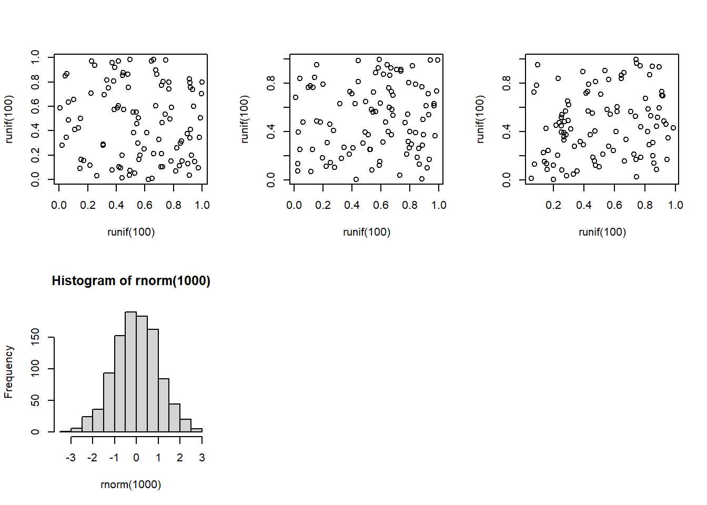
As you can see, the graphs need not all be of the same type. The related version of the command par(mfcol=c(x,y)) will produce a graphical window of the same dimensions but fill it in column order rather than in row order.
A benefit of RStudio over native R is that graphs are saved and you can scroll back and forwards over previous efforts and export them, either as files or to the clipboard. In native R, the export of graphs is no more complicated, but they are overwritten so you cannot scroll to inspect previous plots but must recreate them.
Although R generates graphs very quickly and simply, the labeling and formatting are often not ideal. To alter graph titles, include the options:
main="Main title"
sub="subtitle"
xlab="x-label"
ylab="y-label"
For example:
#switch back to plotting a single plot
par(mfrow=c(1,1))
#make plot
plot(year,yield,main="TG panel yields over time",sub="example scatterplot",ylab="yield in quintal / ha",xlab="year first in trial")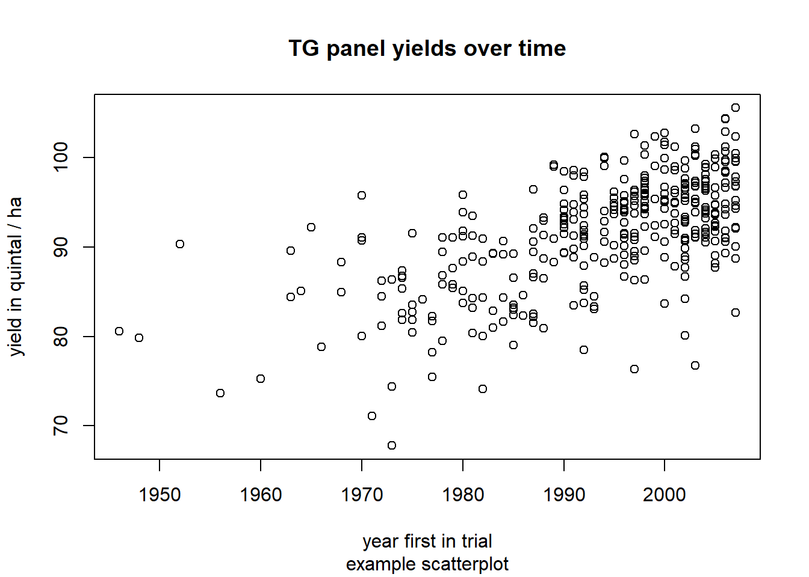
We have only used the basic plotting commands which come with the core R package. Very highly rated, and increasingly used is a package called “ggplot2” http://ggplot2.org/. This is generally included as part of the tidyverse too.There is no time go into this in detail. Select ggplot2 from the “Packages” tab in the bottom right window to active the package. If not installed, click on the “Packages” tab in the bottom right window, then click “install” and enter ggplot2 as the package you wish to install. Alternatively, you can run this line: install.packages("ggplot2"), then load the package from your library:
library("ggplot2")Then:
ggplot(data=TG_data_for_day_1,aes(x=year,y=yield)) + geom_point(shape=1)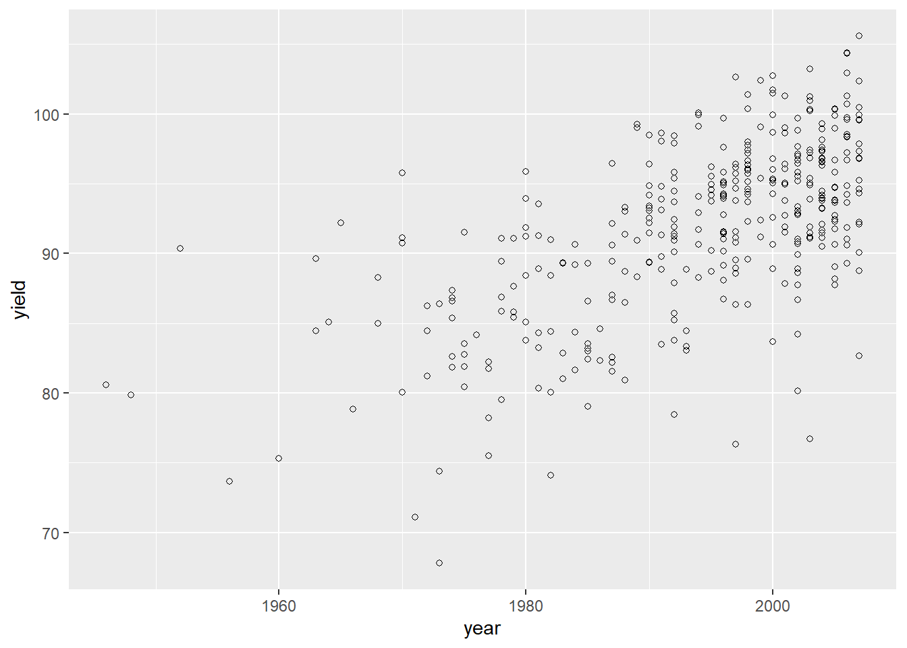
aes stands for aesthetics. If you think this look better and is easier, then ggplot2 is for you. See the web site for more details.
There’s plenty more you can do with ggplot2. There are some good cheat sheets available too.
3.10.2 Probability distributions
In this section we describe how to use R to look up the p-value associated with the most commonly used test statistics and how to look up test statistics associated with p-values.
Firstly the p-value associated with chi-squared:
pchisq(3.84,1,lower.tail=F)## [1] 0.05004352The parameters given to pchisq, in order, are:
3.84 value of the test statistic.
1 the degrees of freedom
lower.tail If set to T (the default) the result is the cumulative distribution up to the value of the test statistic - 0.95 in the example. For significance testing we require the area of the upper tail: 1-0.95 and so set lower.tail=F.
To calculate a chi squared from a p-value we use the command qchisq:
qchisq(0.05,1,lower.tail=F)## [1] 3.841459The syntax is identical to that for pchisq(), so we are required to include lower.tail=F.
Examples for the F distribution are shown below.
pf(3.84,1,1000,lower.tail=F)## [1] 0.05032099qf(0.05,1,1000,lower.tail=F)## [1] 3.850775The examples here are for 1 degree of freedom for the numerator and 1000 degrees of freedom for the denominator. The results are identical to those for a chi-squared test with 1 df. In fact, a chi-squared test with n degrees of freedom is identical to an F test with n degrees of freedom in the numerator and a very large number of degrees of freedom (ideally infinite) in the denominator.
Values for probabilities associated with a normal distribution are:
pnorm(1.96,lower.tail=F)## [1] 0.0249979This probability is for a standardised normal distribution: with a mean of zero and a variance of 1. The probability is for a single tail of the distribution. Generally, we would require the result for a two tailed test - the probability of values higher than 1.96 and lower than -1.96. This probability is just double that for a single tail: 0.05 in this case. Again, this is the same value as for chi-squared with 1 degree of freedom. If a variate has a standardised normal distribution, the variate squared has a chi-squared distribution with 1 degree of freedom:
\(1.96^2 = -1.96^2 = 3.84\)
Probabilities associated with normally distributed variables with different means and variances are produced by specifying the mean and variance.
pnorm(q,mean=x,sd=y) with the inverse function: qnorm(p,mean=x,sd=y)
lower.tail=F can be added if required. The values for mean and standard deviation are now user specified (substitute for x and y in pnorm and qnorm). The default values are 0 and 1.
Finally, the t-test:
pt(1.96,1000,lower.tail=F) ## [1] 0.02513659pt(-1.96,1000) ## [1] 0.02513659We usually carry out a two sided t test - so we require the sum of the lower and upper tail probabilities: equal to two times the single tailed probability. The inverse function follows the usual format and nomenclature:
qt(0.025,10000,lower.tail=F)## [1] 1.9602013.10.3 Random number generation
R has excellent random number generators for several distributions:
rnorm(n, mean=0, sd=1)
runif(n, min=0, max=1)
rchisq(n, df, ncp=0)
rt(n, df, ncp)
rf(n, df1, df2, ncp)
and there are others. These are self explanatory except for ncp. This is the non-centrality parameter. For most use, this will be zero. It is used in power calculations to provide the distribution of the test statistic under an alternative hypothesis. The ncp is the value you would get if you plug values of parameters or observations you expect under the alternative hypothesis into the formula for the test. For example, with a t test, the value under the null hypothesis is zero. If you expect the true difference between your means to be three, then this is the ncp. For a chi-squared test, you would create expected numbers from expected proportions from an alternative hypothesis and calculate a chi-squared value which will be the ncp for power calculations.
3.10.4 Loops: second example
A block of commands, each on a separate line, can be saved in a file and later pasted into R where it will execute (i.e. run as a program). There is, of course, much more to programming in R than this, but this is enough to get you started. The most common requirement is to repeat an operation multiple times. Below is the format for a simple loop which can be easily edited to fit your own purposes.
no_times<-100000
diff<-NA
for (i in 1:no_times) {
diff[i]<-runif(1)-runif(1)
}This code plots the distribution of the difference in value between a pair of uniformly distributed values. You may prefer to reduce the number from 100,000. If you cut and paste the code into R you should get something like this:
hist(diff,breaks=1000)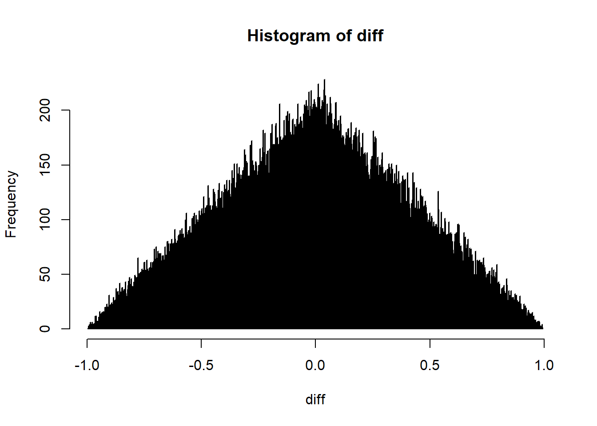
Note that the beginning and end of the loop (or any R program block) is defined by curly brackets. The indentation isn’t obligatory but is good programming practice. The program creates a vector, diff which is then indexed by i. If diff wasn’t first created outside the loop, the program would fail.
Loops in R can run slowly. Often, they can be avoided by the use of the command apply():
apply(TG_data_for_day_1,2,sd)## Warning in var(if (is.vector(x) || is.factor(x)) x else as.double(x), na.rm =
## na.rm): NAs introduced by coercion
## Warning in var(if (is.vector(x) || is.factor(x)) x else as.double(x), na.rm =
## na.rm): NAs introduced by coercion## variety year ORIGIN Rht2 PpdD1 yield
## NA 11.5105231 NA NA 0.4188383 6.2670999
## CALLOW_2011 FRANCE_2010 FRANCE_2011 LGE_2010 LGE_2011 NIAB_2011
## 7.5343555 7.6016464 8.0943785 6.7535158 7.2916383 5.1220707
## FT HT AWNS
## 3.2931899 7.5069727 NAThe first argument to apply is the dataset or matrix we want to work on, the second is whether we want to loop over rows (1), or columns (2 - as in this example). The third is the function you wish to loop over. So here we loop over columns to calculate the standard deviation of each.
The missing data for Rht2 has caused the standard deviation to be returned as NA. We need to include na.rm=T as an option. Unfortunately, there is no way I know to do this within apply. Instead we need to define our own function (which also allows us to look at how to define functions in R in general - another useful lesson in learning to program in R).
sd.na.rm.is.t<-function(x) sd(x,na.rm=T)function(x) defines a set of arguments that our new function sd.na.rm.is.t requires. Here we only need one argument; the name of the dataset, which will be equated to x when we run the function. Following that, on the same line, is the set of commands we want to run. Here we are running an inbuilt function, sd(x,na.rm=T),which will take the data vector x as the source of data.
Try:
sd(AWNS)
sd(AWNS,na.rm=T)
sd.na.rm.is.t(AWNS)
So now:
apply(TG_data_for_day_1,2,sd.na.rm.is.t)## Warning in var(if (is.vector(x) || is.factor(x)) x else as.double(x), na.rm =
## na.rm): NAs introduced by coercion
## Warning in var(if (is.vector(x) || is.factor(x)) x else as.double(x), na.rm =
## na.rm): NAs introduced by coercion## variety year ORIGIN Rht2 PpdD1 yield
## NA 11.5105231 NA 0.4981119 0.4188383 6.2670999
## CALLOW_2011 FRANCE_2010 FRANCE_2011 LGE_2010 LGE_2011 NIAB_2011
## 7.5343555 7.6016464 8.0943785 6.7535158 7.2916383 5.1220707
## FT HT AWNS
## 3.2931899 7.5069727 0.2716556This returns the desired standard deviation of each column of data. We still get NA’s and warnings for attempting to calculate the standard deviation for non-numeric data (for Variety name and country of origin). We could specify which columns of TG_data_for_day_1 to work on to avoid this.
apply(TG_data_for_day_1[,-1:-3],2,sd.na.rm.is.t)
The [,-1:-3] informs R that we need all rows but to drop the first three columns.
This is long winded, but functions are frequently longer sequences of commands rather than just one as in our example. The commands for a long function, which will run over many lines are bracketed with { and }, just as in loops using for.
3.10.5 Miscellany
Included here are some useful commands which have not so far been described and some less frequently used commands which come in handy from time to time.
attributes(object)
Gives information on the object which is often to help you work out what you’ve done.
cbind(datasetA) and rbind(datasetB)
Joins up two datasets by rows or columns. For example:
temp<-TG_data_for_day_1[,1] [1:5]
cbind(temp,TG_data_for_day_1[1:5,1:3] )## temp variety year ORIGIN
## 1 AARDEN AARDEN 2003 DEU
## 2 AARDVARK AARDVARK 1997 GBR
## 3 ABELE ABELE 1970 GBR
## 4 ABO ABO 1977 FRA
## 5 ACCESS ACCESS 1998 GBRWe have created a subset of the data with two copies of the variety names. I’ve limited this to the first 5 rows to save paper. There is no particular reason we would want to do this, it’s just as a demonstration.
Next, we create two copies of the first three columns of the data using rbind:
temp<-TG_data_for_day_1[,1:3]
temp2<-rbind(temp,TG_data_for_day_1[,1:3])
head(temp2[order(temp2$variety),])## variety year ORIGIN
## 1 AARDEN 2003 DEU
## 377 AARDEN 2003 DEU
## 2 AARDVARK 1997 GBR
## 378 AARDVARK 1997 GBR
## 3 ABELE 1970 GBR
## 379 ABELE 1970 GBRNote, that in ordering the data we have used order(temp2$variety) rather than order(variety) because we require the version of “variety”" associated with the new structure temp2, not the version of variety that we attached earlier.
dim(x)
Retrieve the dimensions of an array or dataset.
dim(TG_data_for_day_1)## [1] 376 15dim(temp2)## [1] 752 3help(command)
This opens a new window and provides help on the command. help(lm) for example, will give help on the linear modelling command that we have used extensively. The help is written in a terse and technical style however, which may be hard to understand at first but you get used to it. It is useful to see what options are available with each command - for many of the commands used in this guide more are available than have been described. Often, sufficient of the output from help makes sense to be able to get a command working by trial and error. At the bottom of the output, there are often examples of the command’s use: again not always easy to follow. In Rstudio, help is available (in the same unhelpful style) directly from the windows.
history(x)
In native R, this opens up a window with a list of the most recently issued x commands. The default number is 25. These can be copied back into the R window and re-executed. The window with the output can be saved from the File menu to keep a record of commands issued during the R session. In RStudio, the history of commands is available directly from a tab in the top right hand window.c
ls() or equivalently objects()
Lists all the variables available in the current R session. This command can also be executed from the menu in native R, selecting first “Misc,” then “List objects.” In RStudio it is displayed using the Environment tab in the top right hand window.
matrix(data, nrow = x,ncol =y)
Defines a matrix and fills it with data. For example:
matrix(rnorm(12),nrow=3, ncol=4)## [,1] [,2] [,3] [,4]
## [1,] -1.438823 1.6780448 -0.8348513 -0.5138228
## [2,] -1.167761 -0.1034786 2.0115816 -1.3274879
## [3,] 1.383999 1.0041599 -0.5920141 0.4396548The rnorm() part has simulated 12 random numbers which have a specified normal distribution.
Note that there is no need to define the column number; it is fixed by the data and by the row number. More commonly, we would want to name the matrix. By default, all data are initially recorded as missing:
matrix(nrow=3,ncol=4)## [,1] [,2] [,3] [,4]
## [1,] NA NA NA NA
## [2,] NA NA NA NA
## [3,] NA NA NA NArep(x,y)
Generates a repeated list:
rep(1:3,4)## [1] 1 2 3 1 2 3 1 2 3 1 2 3rep(c('apples','pears'),2)## [1] "apples" "pears" "apples" "pears"Remove an object:
rm(harvest_index)Remove those objects that are no longer required.
rm(list=ls(all.names=TRUE)) Would removes all variables, although this can be more easily achieved from the Session tab which offers more options.
Pull row names from an object (and only show first 5):
rownames(TG_data_for_day_1) [1:5]## [1] "1" "2" "3" "4" "5"Pull column names:
colnames(TG_data_for_day_1)## [1] "variety" "year" "ORIGIN" "Rht2" "PpdD1"
## [6] "yield" "CALLOW_2011" "FRANCE_2010" "FRANCE_2011" "LGE_2010"
## [11] "LGE_2011" "NIAB_2011" "FT" "HT" "AWNS"You can also write new names:
rownames(TG_data_for_day_1)[1:3]<-c("a","b","c")
rownames(TG_data_for_day_1)[1:10]## [1] "a" "b" "c" "4" "5" "6" "7" "8" "9" "10"seq(x)
Generates a sequential list.
`seq(10)` produces a list from 1:10.
`seq(10,12,0.25)` produces a list from 10 to 12 in steps of 1/4sink(filename)
Sends output to the given file rather than to the console. sink() with no filename will turn off the previous redirection, Useful if you are expecting lots of output. You can issue this before the command and then turn it off when the command has completed.
source(filename)
Runs commands from the filename - given as a variable containing the name or as the name itself in quotes.
split(x,y)
Partitions a variable or whole dataframe x into separate variables or dataframes on the basis of matches to y. Give this a go using:
split(yield,ORIGIN) [1:2]
In my hands, the following convoluted code will split our data into three separate data frames.
DEU<-data.frame(split(TG_data_for_day_1,ORIGIN)[1])
FRA<-data.frame(split(TG_data_for_day_1, ORIGIN)[2])
UK<-data.frame(split(TG_data_for_day_1, ORIGIN)[3])
dim(DEU)## [1] 89 15dim(FRA)## [1] 212 15dim(UK)## [1] 73 15dim(TG_data_for_day_1)## [1] 376 15The row numbers don’t add up because for some countries the origin was NA.
3.10.6 My number one piece of advice
If you have reached this stage of the tutorial, no doubt you have taken on board a lot of information! It’s inconceivable to remember all that information. While you can refer back to this tutorial whenever you need to for help, I find the best method is usually just to ‘google it’.
Whether you are a first time user, an intermediate user, or professional software developer, this is the universal solution to most programming/coding problems.
In terms of R issues, you can normally just google your problem in the following format. Let’s say we wanted to change the position of a plot title for a figure we were forming for a publication/presentation, I would search for:
“How to change position of plot title in r”
The first hit for me is this. That link shows someone asking my question and some fantastic solutions to solving the problem.
The websites stackoverflow and stackexchange are typically the best options and have helped me a great deal. Normally, the question you are asking has been already addressed on these websites and users have provided more solutions than you need for the question at hand. I would suggest getting to grips with the format and etiquette of these website communities before posting your own questions. The moderators/users like the questions to be asked in a certain way and can be slightly hostile if you don’t meet their criteria. Then your question and their slightly rude responses remain on the internet for everyone to see. I’m speaking from past experience here!
There are some good R reddit communities that accept all type of questions (e.g. try this one).
3.10.7 Learn more
Much useful information and documentation is available on the R web site, including the R manual “An Introduction to R.”
The ‘Introductory Statistics with R’ book (Dalgaard 2008) is an excellent introduction both to R and to statistical analysis, with many simple examples.
R in a Nutshell (Adler 2010), by Joseph Adler in the Nutshell series from O’Reilly gives a lot of detail about what and how R does what it does. An excellent reference book, but not for beginners.
3.10.8 Packages
Many are available from the Comprehensive R Archive network (CRAN) web site http://cran.r-project.org/. They can be installed directly from this site, or downloaded as zip files and installed later (useful if you need to install onto multiple machines). We shall be using several of these later.
These packages generally come with their own manual, often detailed. That for the R/QTL package, for example, runs to 96 pages. Although the CRAN website is the first place to search for suitable packages, they are also found elsewhere and are often referred to in methodological publications or the methods sections of paper: programming in R is an expanding industry. The more popular packages (R/QTL again) may have books published about them and often course material and lecture notes can be found on the web.
3.10.9 The Tidyverse
If you are new to R, it is worth putting the effort into learning about this. The website is: https://www.tidyverse.org/. The book “R for Data Science” (Wickham and Grolemund 2016), which is free online from this website is a very good introduction, including to ggplot.
3.10.10 Other resources
For the “Understanding data types and R objects” section in this tutorial, inspiration was taken from https://datacarpentry.org/R-ecology-lesson/. This is an excellent resource and worth checking out. Additionally, formal definitions were taken from the book “R in Action: Data Analysis and Graphics with R” (Kabacoff 2011).
3.11 List of commands, mainly described in this guide.
3.11.0.1 General
apply = fast way of looping over rows and columns
attach = attaches a dataset to R for subsequent analyses
attributes = get information on the attributes of an object
cbind = concatenate two tables or vectors by columns
colnames = adds column names to a table or reads them from a table
detach = attaches a dataset to R for subsequent analyses
demo = demonstration a command (not available for most commands)
dim = retrieve the dimensions of an object
factor = convert a variable or text into a factor
for = loop over a a set of commands with different input values
function = define a function which can then be run repeatedly
getwd = returns the path to the working directory
help = returns help on a command
history = lists previously issued commands
install.packages = select a package to install
is.na = returns TRUE if a value is NA.
length = returns the number of entries in a variate
ls = lists all active data structures and variates
matrix = defines a matrix and fills it with data.
order = returns the order or a variate for use in a subsequent sort
quit = exit R
rbind = concatenate two tables or vectors by rows
read.csv = reads in data from .csv file
read.table = reads in data
rep = generates a list with repeating elements
rm = delete data structures and variates from R
rownames = adds row names to a table or reads them from a table
searchpaths = lists attached packages and datasets in the order in which
searched.
seq = creates a sequence of values
sink = writes output to a file
sort = sorts data
source = reads commands from a file
split = splits data on a factor value
subset = selects a subset of data for subsequent analysis
table = defines a table: used for input into contingency chi sq tests.
3.11.0.2 Graphical
abline = add the best fitting straight line to a scattergram
boxplot = produce a Box-and-whisker plot
heatmap = plots a heatmap and dendogram
curve = add a function to a graph
hist = plot a histogram
image = colours-in a matrix according to its values.
pairs = plot multiple scattergrams in a matrix format
par = set graphical parameters
pdf = writes graphical output to a pdf file
plot = produce a scattergram
3.11.0.3 Statistics
anova = return an anova table from a linear model
apply = applies a function to rows and/or columns of a matrix
chisq.test = carry out a contingency chi-squared test
colMeans = returns means across columns of a dataset
colSums = returns totals across columns of a dataset
cor = returns the correlation coefficient
fitted = returns the fitted values from a linear model
lm = define and execute a linear model
mean = returns the mean of a variate
median = returns the median of a variate
minimum = returns the minimum of a variate
maximum = returns the maximum of a variate
pchisq = returns the p-value of a chi-squared statistic
pf = returns the p-value of a F (variance ratio) statistic
pnorm = returns the p-value for a normally distributed variate
pt = returns the p-value of a t-test
qchisq = returns a chi-squared statistic for a given probability
qnorm = returns a normality distributed variate for a given probability
quantile = returns the quantiles of a variate
qf = returns a F (variance ratio) statistic for a given probability
qt = returns the t-test statistic for a given probability
resid = returns the residuals from a linear model
rchisq = returns random numbers from the chisq distribution
rf = returns random numbers from the F distribution
rnorm = returns random numbers from the normal distribution
rowMeans = returns means across rows of a dataset
rowSums = returns totals across rows of a dataset
runif = returns random numbers from the uniform distribution
rt = returns random numbers from the t distribution
sd = returns the standard deviation of a variate
sum = returns the sum of a variate
summary = summarise data
t.test = one and two sample t-test
var = returns the mean of a variate
var.test = compare two variances by an F test